第 1 / 30 页

全国英语六级历年真题
1 / 30
2012 年12 月大学英语六级(CET-6)真题试卷
Part I
Writing
(30 minutes)
Direction: For this part, you are allowed 30 minutes to write an essay entitled Man and
Computer by commenting on the saying, "The real danger is not that the computer will
begin to think like man, but that man will begin to think like the computer. "You should
write at least 150 words but no more than 200 words.
On Maintaining Trust
Part II Reading Comprehension (Skimming and Scanning) (15 minutes)
Directions: In this part, you will have 15 minutes to go over the passage quickly and answer the
questions on Answer Sheet 1. For questions 1-7, choose the best answer from the four
choices marked A), B), C) and D). For questions 8-10, complete the sentences with the
information given in the passage.
Rates are low, but consumers won’t borrow
The US Federal Reserve(Fed)'s announcement last week that it intended to keep credit cheap for at
least two more years was a clear invitation to Americans: Go out and borrow.
But many economists say it will take more than low interest rates to persuade consumers to take on
more debt. There are already signs that the recent stock market fluctuations, turbulence in Europe
and the US deficit have scared consumers. On Friday, preliminary data showed that the Thomson
Reuters/University of Michigan consumer sentiment index had fallen this month to lower than it
was in November 2008, when the United States was deep in recession.
Under normal circumstances, the Fed's announcement might have attracted new home and car
buyers and prompted credit card holders to rack up fresh charges. But with unemployment high and
those with jobs worried about keeping them, consumers are more concerned about paying off the
loans they already have than adding more debt. And by showing its hand for the next two years, the
Fed may have thoughtlessly invited prospective borrowers to put off large purchases.
Lenders, meanwhile, are still dealing with the effects of the boom-gone-bust and are forcing
prospective borrowers to go to extraordinary lengths to prove their creditworthiness.
查看 / 复制本页文字
全国英语六级历年真题 1 / 30 2012 年12 月大学英语六级(CET-6)真题试卷 Part I Writing (30 minutes) Direction: For this part, you are allowed 30 minutes to write an essay entitled Man and Computer by commenting on the saying, "The real danger is not that the computer will begin to think like man, but that man will begin to think like the computer. "You should write at least 150 words but no more than 200 words. On Maintaining Trust Part II Reading Comprehension (Skimming and Scanning) (15 minutes) Directions: In this part, you will have 15 minutes to go over the passage quickly and answer the questions on Answer Sheet 1. For questions 1-7, choose the best answer from the four choices marked A), B), C) and D). For questions 8-10, complete the sentences with the information given in the passage. Rates are low, but consumers won’t borrow The US Federal Reserve(Fed)'s announcement last week that it intended to keep credit cheap for at least two more years was a clear invitation to Americans: Go out and borrow. But many economists say it will take more than low interest rates to persuade consumers to take on more debt. There are already signs that the recent stock market fluctuations, turbulence in Europe and the US deficit have scared consumers. On Friday, preliminary data showed that the Thomson Reuters/University of Michigan consumer sentiment index had fallen this month to lower than it was in November 2008, when the United States was deep in recession. Under normal circumstances, the Fed's announcement might have attracted new home and car buyers and prompted credit card holders to rack up fresh charges. But with unemployment high and those with jobs worried about keeping them, consumers are more concerned about paying off the loans they already have than adding more debt. And by showing its hand for the next two years, the Fed may have thoughtlessly invited prospective borrowers to put off large purchases. Lenders, meanwhile, are still dealing with the effects of the boom-gone-bust and are forcing prospective borrowers to go to extraordinary lengths to prove their creditworthiness.
第 2 / 30 页
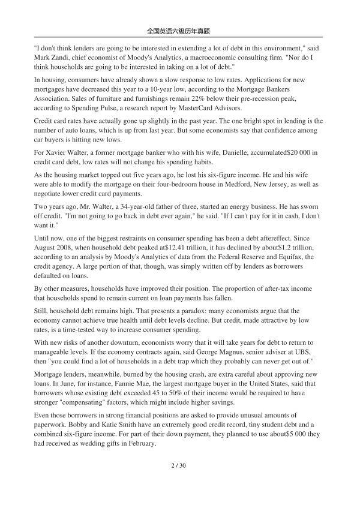
全国英语六级历年真题
2 / 30
"I don't think lenders are going to be interested in extending a lot of debt in this environment," said
Mark Zandi, chief economist of Moody's Analytics, a macroeconomic consulting firm. "Nor do I
think households are going to be interested in taking on a lot of debt."
In housing, consumers have already shown a slow response to low rates. Applications for new
mortgages have decreased this year to a 10-year low, according to the Mortgage Bankers
Association. Sales of furniture and furnishings remain 22% below their pre-recession peak,
according to Spending Pulse, a research report by MasterCard Advisors.
Credit card rates have actually gone up slightly in the past year. The one bright spot in lending is the
number of auto loans, which is up from last year. But some economists say that confidence among
car buyers is hitting new lows.
For Xavier Walter, a former mortgage banker who with his wife, Danielle, accumulated$20 000 in
credit card debt, low rates will not change his spending habits.
As the housing market topped out five years ago, he lost his six-figure income. He and his wife
were able to modify the mortgage on their four-bedroom house in Medford, New Jersey, as well as
negotiate lower credit card payments.
Two years ago, Mr. Walter, a 34-year-old father of three, started an energy business. He has sworn
off credit. "I'm not going to go back in debt ever again," he said. "If I can't pay for it in cash, I don't
want it."
Until now, one of the biggest restraints on consumer spending has been a debt aftereffect. Since
August 2008, when household debt peaked at$12.41 trillion, it has declined by about$1.2 trillion,
according to an analysis by Moody's Analytics of data from the Federal Reserve and Equifax, the
credit agency. A large portion of that, though, was simply written off by lenders as borrowers
defaulted on loans.
By other measures, households have improved their position. The proportion of after-tax income
that households spend to remain current on loan payments has fallen.
Still, household debt remains high. That presents a paradox: many economists argue that the
economy cannot achieve true health until debt levels decline. But credit, made attractive by low
rates, is a time-tested way to increase consumer spending.
With new risks of another downturn, economists worry that it will take years for debt to return to
manageable levels. If the economy contracts again, said George Magnus, senior adviser at UBS,
then "you could find a lot of households in a debt trap which they probably can never get out of."
Mortgage lenders, meanwhile, burned by the housing crash, are extra careful about approving new
loans. In June, for instance, Fannie Mae, the largest mortgage buyer in the United States, said that
borrowers whose existing debt exceeded 45 to 50% of their income would be required to have
stronger "compensating" factors, which might include higher savings.
Even those borrowers in strong financial positions are asked to provide unusual amounts of
paperwork. Bobby and Katie Smith have an extremely good credit record, tiny student debt and a
combined six-figure income. For part of their down payment, they planned to use about$5 000 they
had received as wedding gifts in February.
查看 / 复制本页文字
全国英语六级历年真题 2 / 30 "I don't think lenders are going to be interested in extending a lot of debt in this environment," said Mark Zandi, chief economist of Moody's Analytics, a macroeconomic consulting firm. "Nor do I think households are going to be interested in taking on a lot of debt." In housing, consumers have already shown a slow response to low rates. Applications for new mortgages have decreased this year to a 10-year low, according to the Mortgage Bankers Association. Sales of furniture and furnishings remain 22% below their pre-recession peak, according to Spending Pulse, a research report by MasterCard Advisors. Credit card rates have actually gone up slightly in the past year. The one bright spot in lending is the number of auto loans, which is up from last year. But some economists say that confidence among car buyers is hitting new lows. For Xavier Walter, a former mortgage banker who with his wife, Danielle, accumulated$20 000 in credit card debt, low rates will not change his spending habits. As the housing market topped out five years ago, he lost his six-figure income. He and his wife were able to modify the mortgage on their four-bedroom house in Medford, New Jersey, as well as negotiate lower credit card payments. Two years ago, Mr. Walter, a 34-year-old father of three, started an energy business. He has sworn off credit. "I'm not going to go back in debt ever again," he said. "If I can't pay for it in cash, I don't want it." Until now, one of the biggest restraints on consumer spending has been a debt aftereffect. Since August 2008, when household debt peaked at$12.41 trillion, it has declined by about$1.2 trillion, according to an analysis by Moody's Analytics of data from the Federal Reserve and Equifax, the credit agency. A large portion of that, though, was simply written off by lenders as borrowers defaulted on loans. By other measures, households have improved their position. The proportion of after-tax income that households spend to remain current on loan payments has fallen. Still, household debt remains high. That presents a paradox: many economists argue that the economy cannot achieve true health until debt levels decline. But credit, made attractive by low rates, is a time-tested way to increase consumer spending. With new risks of another downturn, economists worry that it will take years for debt to return to manageable levels. If the economy contracts again, said George Magnus, senior adviser at UBS, then "you could find a lot of households in a debt trap which they probably can never get out of." Mortgage lenders, meanwhile, burned by the housing crash, are extra careful about approving new loans. In June, for instance, Fannie Mae, the largest mortgage buyer in the United States, said that borrowers whose existing debt exceeded 45 to 50% of their income would be required to have stronger "compensating" factors, which might include higher savings. Even those borrowers in strong financial positions are asked to provide unusual amounts of paperwork. Bobby and Katie Smith have an extremely good credit record, tiny student debt and a combined six-figure income. For part of their down payment, they planned to use about$5 000 they had received as wedding gifts in February.
第 3 / 30 页
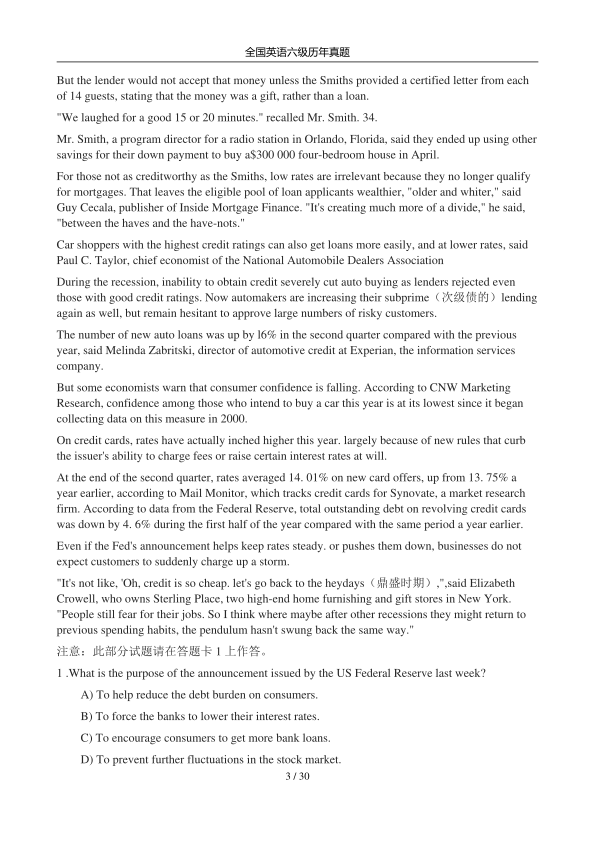
全国英语六级历年真题
3 / 30
But the lender would not accept that money unless the Smiths provided a certified letter from each
of 14 guests, stating that the money was a gift, rather than a loan.
"We laughed for a good 15 or 20 minutes." recalled Mr. Smith. 34.
Mr. Smith, a program director for a radio station in Orlando, Florida, said they ended up using other
savings for their down payment to buy a$300 000 four-bedroom house in April.
For those not as creditworthy as the Smiths, low rates are irrelevant because they no longer qualify
for mortgages. That leaves the eligible pool of loan applicants wealthier, "older and whiter," said
Guy Cecala, publisher of Inside Mortgage Finance. "It's creating much more of a divide," he said,
"between the haves and the have-nots."
Car shoppers with the highest credit ratings can also get loans more easily, and at lower rates, said
Paul C. Taylor, chief economist of the National Automobile Dealers Association
During the recession, inability to obtain credit severely cut auto buying as lenders rejected even
those with good credit ratings. Now automakers are increasing their subprime（次级债的）lending
again as well, but remain hesitant to approve large numbers of risky customers.
The number of new auto loans was up by l6% in the second quarter compared with the previous
year, said Melinda Zabritski, director of automotive credit at Experian, the information services
company.
But some economists warn that consumer confidence is falling. According to CNW Marketing
Research, confidence among those who intend to buy a car this year is at its lowest since it began
collecting data on this measure in 2000.
On credit cards, rates have actually inched higher this year. largely because of new rules that curb
the issuer's ability to charge fees or raise certain interest rates at will.
At the end of the second quarter, rates averaged 14. 01% on new card offers, up from 13. 75% a
year earlier, according to Mail Monitor, which tracks credit cards for Synovate, a market research
firm. According to data from the Federal Reserve, total outstanding debt on revolving credit cards
was down by 4. 6% during the first half of the year compared with the same period a year earlier.
Even if the Fed's announcement helps keep rates steady. or pushes them down, businesses do not
expect customers to suddenly charge up a storm.
"It's not like, 'Oh, credit is so cheap. let's go back to the heydays（鼎盛时期）,",said Elizabeth
Crowell, who owns Sterling Place, two high-end home furnishing and gift stores in New York.
"People still fear for their jobs. So I think where maybe after other recessions they might return to
previous spending habits, the pendulum hasn't swung back the same way."
注意：此部分试题请在答题卡1 上作答。
1 .What is the purpose of the announcement issued by the US Federal Reserve last week?
A) To help reduce the debt burden on consumers.
B) To force the banks to lower their interest rates.
C) To encourage consumers to get more bank loans.
D) To prevent further fluctuations in the stock market.
查看 / 复制本页文字
全国英语六级历年真题 3 / 30 But the lender would not accept that money unless the Smiths provided a certified letter from each of 14 guests, stating that the money was a gift, rather than a loan. "We laughed for a good 15 or 20 minutes." recalled Mr. Smith. 34. Mr. Smith, a program director for a radio station in Orlando, Florida, said they ended up using other savings for their down payment to buy a$300 000 four-bedroom house in April. For those not as creditworthy as the Smiths, low rates are irrelevant because they no longer qualify for mortgages. That leaves the eligible pool of loan applicants wealthier, "older and whiter," said Guy Cecala, publisher of Inside Mortgage Finance. "It's creating much more of a divide," he said, "between the haves and the have-nots." Car shoppers with the highest credit ratings can also get loans more easily, and at lower rates, said Paul C. Taylor, chief economist of the National Automobile Dealers Association During the recession, inability to obtain credit severely cut auto buying as lenders rejected even those with good credit ratings. Now automakers are increasing their subprime（次级债的）lending again as well, but remain hesitant to approve large numbers of risky customers. The number of new auto loans was up by l6% in the second quarter compared with the previous year, said Melinda Zabritski, director of automotive credit at Experian, the information services company. But some economists warn that consumer confidence is falling. According to CNW Marketing Research, confidence among those who intend to buy a car this year is at its lowest since it began collecting data on this measure in 2000. On credit cards, rates have actually inched higher this year. largely because of new rules that curb the issuer's ability to charge fees or raise certain interest rates at will. At the end of the second quarter, rates averaged 14. 01% on new card offers, up from 13. 75% a year earlier, according to Mail Monitor, which tracks credit cards for Synovate, a market research firm. According to data from the Federal Reserve, total outstanding debt on revolving credit cards was down by 4. 6% during the first half of the year compared with the same period a year earlier. Even if the Fed's announcement helps keep rates steady. or pushes them down, businesses do not expect customers to suddenly charge up a storm. "It's not like, 'Oh, credit is so cheap. let's go back to the heydays（鼎盛时期）,",said Elizabeth Crowell, who owns Sterling Place, two high-end home furnishing and gift stores in New York. "People still fear for their jobs. So I think where maybe after other recessions they might return to previous spending habits, the pendulum hasn't swung back the same way." 注意：此部分试题请在答题卡1 上作答。 1 .What is the purpose of the announcement issued by the US Federal Reserve last week? A) To help reduce the debt burden on consumers. B) To force the banks to lower their interest rates. C) To encourage consumers to get more bank loans. D) To prevent further fluctuations in the stock market.
第 4 / 30 页
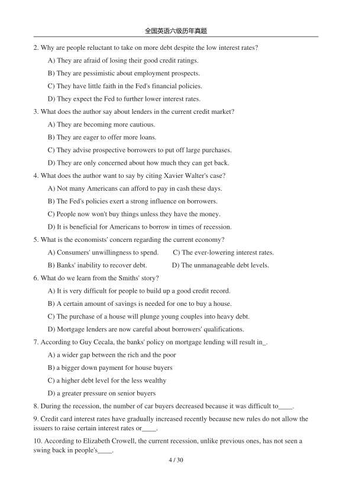
全国英语六级历年真题
4 / 30
2. Why are people reluctant to take on more debt despite the low interest rates?
A) They are afraid of losing their good credit ratings.
B) They are pessimistic about employment prospects.
C) They have little faith in the Fed's financial policies.
D) They expect the Fed to further lower interest rates.
3. What does the author say about lenders in the current credit market?
A) They are becoming more cautious.
B) They are eager to offer more loans.
C) They advise prospective borrowers to put off large purchases.
D) They are only concerned about how much they can get back.
4. What does the author want to say by citing Xavier Walter's case?
A) Not many Americans can afford to pay in cash these days.
B) The Fed's policies exert a strong influence on borrowers.
C) People now won't buy things unless they have the money.
D) It is beneficial for Americans to borrow in times of recession.
5. What is the economists' concern regarding the current economy?
A) Consumers' unwillingness to spend.
C) The ever-lowering interest rates.
B) Banks' inability to recover debt.
D) The unmanageable debt levels.
6. What do we learn from the Smiths' story?
A) It is very difficult for people to build up a good credit record.
B) A certain amount of savings is needed for one to buy a house.
C) The purchase of a house will plunge young couples into heavy debt.
D) Mortgage lenders are now careful about borrowers' qualifications.
7. According to Guy Cecala, the banks' policy on mortgage lending will result in_.
A) a wider gap between the rich and the poor
B) a bigger down payment for house buyers
C) a higher debt level for the less wealthy
D) a greater pressure on senior buyers
8. During the recession, the number of car buyers decreased because it was difficult to____.
9. Credit card interest rates have gradually increased recently because new rules do not allow the
issuers to raise certain interest rates or____.
10. According to Elizabeth Crowell, the current recession, unlike previous ones, has not seen a
swing back in people's____.
查看 / 复制本页文字
全国英语六级历年真题 4 / 30 2. Why are people reluctant to take on more debt despite the low interest rates? A) They are afraid of losing their good credit ratings. B) They are pessimistic about employment prospects. C) They have little faith in the Fed's financial policies. D) They expect the Fed to further lower interest rates. 3. What does the author say about lenders in the current credit market? A) They are becoming more cautious. B) They are eager to offer more loans. C) They advise prospective borrowers to put off large purchases. D) They are only concerned about how much they can get back. 4. What does the author want to say by citing Xavier Walter's case? A) Not many Americans can afford to pay in cash these days. B) The Fed's policies exert a strong influence on borrowers. C) People now won't buy things unless they have the money. D) It is beneficial for Americans to borrow in times of recession. 5. What is the economists' concern regarding the current economy? A) Consumers' unwillingness to spend. C) The ever-lowering interest rates. B) Banks' inability to recover debt. D) The unmanageable debt levels. 6. What do we learn from the Smiths' story? A) It is very difficult for people to build up a good credit record. B) A certain amount of savings is needed for one to buy a house. C) The purchase of a house will plunge young couples into heavy debt. D) Mortgage lenders are now careful about borrowers' qualifications. 7. According to Guy Cecala, the banks' policy on mortgage lending will result in_. A) a wider gap between the rich and the poor B) a bigger down payment for house buyers C) a higher debt level for the less wealthy D) a greater pressure on senior buyers 8. During the recession, the number of car buyers decreased because it was difficult to____. 9. Credit card interest rates have gradually increased recently because new rules do not allow the issuers to raise certain interest rates or____. 10. According to Elizabeth Crowell, the current recession, unlike previous ones, has not seen a swing back in people's____.
第 5 / 30 页
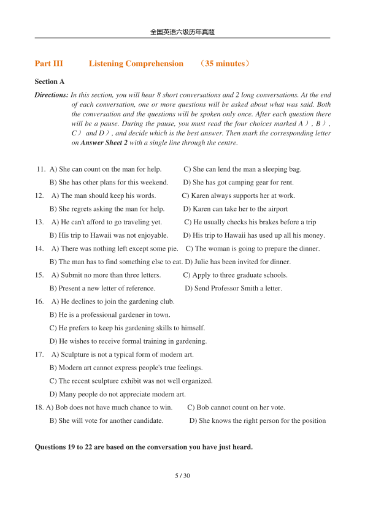
全国英语六级历年真题
5 / 30
Part III
Listening Comprehension
（35 minutes）
Section A
Directions: In this section, you will hear 8 short conversations and 2 long conversations. At the end
of each conversation, one or more questions will be asked about what was said. Both
the conversation and the questions will be spoken only once. After each question there
will be a pause. During the pause, you must read the four choices marked A）, B）,
C）and D）, and decide which is the best answer. Then mark the corresponding letter
on Answer Sheet 2 with a single line through the centre.
11. A) She can count on the man for help.
C) She can lend the man a sleeping bag.
B) She has other plans for this weekend.
D) She has got camping gear for rent.
12.
A) The man should keep his words.
C) Karen always supports her at work.
B) She regrets asking the man for help.
D) Karen can take her to the airport
13.
A) He can't afford to go traveling yet.
C) He usually checks his brakes before a trip
B) His trip to Hawaii was not enjoyable.
D) His trip to Hawaii has used up all his money.
14.
A) There was nothing left except some pie.
C) The woman is going to prepare the dinner.
B) The man has to find something else to eat. D) Julie has been invited for dinner.
15.
A) Submit no more than three letters.
C) Apply to three graduate schools.
B) Present a new letter of reference.
D) Send Professor Smith a letter.
16.
A) He declines to join the gardening club.
B) He is a professional gardener in town.
C) He prefers to keep his gardening skills to himself.
D) He wishes to receive formal training in gardening.
17.
A) Sculpture is not a typical form of modern art.
B) Modern art cannot express people's true feelings.
C) The recent sculpture exhibit was not well organized.
D) Many people do not appreciate modern art.
18. A) Bob does not have much chance to win.
C) Bob cannot count on her vote.
B) She will vote for another candidate.
D) She knows the right person for the position
Questions 19 to 22 are based on the conversation you have just heard.
查看 / 复制本页文字
全国英语六级历年真题 5 / 30 Part III Listening Comprehension （35 minutes） Section A Directions: In this section, you will hear 8 short conversations and 2 long conversations. At the end of each conversation, one or more questions will be asked about what was said. Both the conversation and the questions will be spoken only once. After each question there will be a pause. During the pause, you must read the four choices marked A）, B）, C）and D）, and decide which is the best answer. Then mark the corresponding letter on Answer Sheet 2 with a single line through the centre. 11. A) She can count on the man for help. C) She can lend the man a sleeping bag. B) She has other plans for this weekend. D) She has got camping gear for rent. 12. A) The man should keep his words. C) Karen always supports her at work. B) She regrets asking the man for help. D) Karen can take her to the airport 13. A) He can't afford to go traveling yet. C) He usually checks his brakes before a trip B) His trip to Hawaii was not enjoyable. D) His trip to Hawaii has used up all his money. 14. A) There was nothing left except some pie. C) The woman is going to prepare the dinner. B) The man has to find something else to eat. D) Julie has been invited for dinner. 15. A) Submit no more than three letters. C) Apply to three graduate schools. B) Present a new letter of reference. D) Send Professor Smith a letter. 16. A) He declines to join the gardening club. B) He is a professional gardener in town. C) He prefers to keep his gardening skills to himself. D) He wishes to receive formal training in gardening. 17. A) Sculpture is not a typical form of modern art. B) Modern art cannot express people's true feelings. C) The recent sculpture exhibit was not well organized. D) Many people do not appreciate modern art. 18. A) Bob does not have much chance to win. C) Bob cannot count on her vote. B) She will vote for another candidate. D) She knows the right person for the position Questions 19 to 22 are based on the conversation you have just heard.
第 6 / 30 页
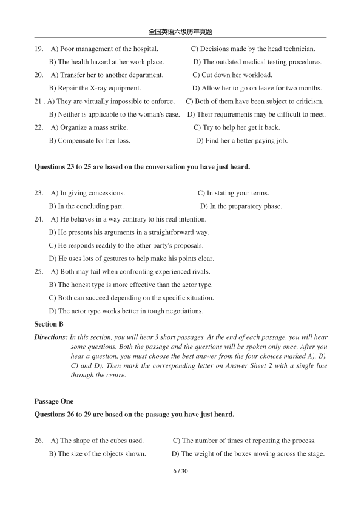
全国英语六级历年真题
6 / 30
19.
A) Poor management of the hospital.
C) Decisions made by the head technician.
B) The health hazard at her work place.
D) The outdated medical testing procedures.
20.
A) Transfer her to another department.
C) Cut down her workload.
B) Repair the X-ray equipment.
D) Allow her to go on leave for two months.
21 . A) They are virtually impossible to enforce.
C) Both of them have been subject to criticism.
B) Neither is applicable to the woman's case.
D) Their requirements may be difficult to meet.
22.
A) Organize a mass strike.
C) Try to help her get it back.
B) Compensate for her loss.
D) Find her a better paying job.
Questions 23 to 25 are based on the conversation you have just heard.
23.
A) In giving concessions.
C) In stating your terms.
B) In the concluding part.
D) In the preparatory phase.
24.
A) He behaves in a way contrary to his real intention.
B) He presents his arguments in a straightforward way.
C) He responds readily to the other party's proposals.
D) He uses lots of gestures to help make his points clear.
25.
A) Both may fail when confronting experienced rivals.
B) The honest type is more effective than the actor type.
C) Both can succeed depending on the specific situation.
D) The actor type works better in tough negotiations.
Section B
Directions: In this section, you will hear 3 short passages. At the end of each passage, you will hear
some questions. Both the passage and the questions will be spoken only once. After you
hear a question, you must choose the best answer from the four choices marked A), B),
C) and D). Then mark the corresponding letter on Answer Sheet 2 with a single line
through the centre.
Passage One
Questions 26 to 29 are based on the passage you have just heard.
26.
A) The shape of the cubes used.
C) The number of times of repeating the process.
B) The size of the objects shown.
D) The weight of the boxes moving across the stage.
查看 / 复制本页文字
全国英语六级历年真题 6 / 30 19. A) Poor management of the hospital. C) Decisions made by the head technician. B) The health hazard at her work place. D) The outdated medical testing procedures. 20. A) Transfer her to another department. C) Cut down her workload. B) Repair the X-ray equipment. D) Allow her to go on leave for two months. 21 . A) They are virtually impossible to enforce. C) Both of them have been subject to criticism. B) Neither is applicable to the woman's case. D) Their requirements may be difficult to meet. 22. A) Organize a mass strike. C) Try to help her get it back. B) Compensate for her loss. D) Find her a better paying job. Questions 23 to 25 are based on the conversation you have just heard. 23. A) In giving concessions. C) In stating your terms. B) In the concluding part. D) In the preparatory phase. 24. A) He behaves in a way contrary to his real intention. B) He presents his arguments in a straightforward way. C) He responds readily to the other party's proposals. D) He uses lots of gestures to help make his points clear. 25. A) Both may fail when confronting experienced rivals. B) The honest type is more effective than the actor type. C) Both can succeed depending on the specific situation. D) The actor type works better in tough negotiations. Section B Directions: In this section, you will hear 3 short passages. At the end of each passage, you will hear some questions. Both the passage and the questions will be spoken only once. After you hear a question, you must choose the best answer from the four choices marked A), B), C) and D). Then mark the corresponding letter on Answer Sheet 2 with a single line through the centre. Passage One Questions 26 to 29 are based on the passage you have just heard. 26. A) The shape of the cubes used. C) The number of times of repeating the process. B) The size of the objects shown. D) The weight of the boxes moving across the stage.
第 7 / 30 页
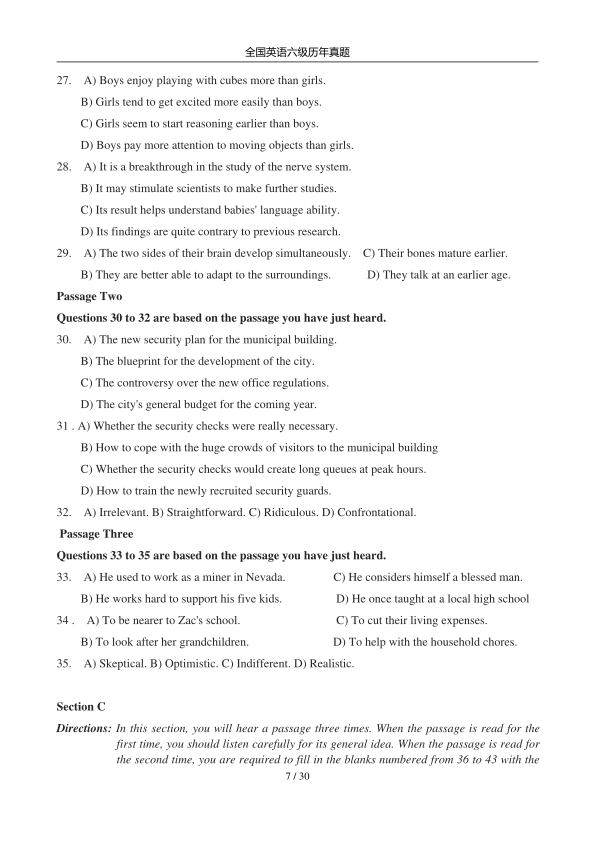
全国英语六级历年真题
7 / 30
27.
A) Boys enjoy playing with cubes more than girls.
B) Girls tend to get excited more easily than boys.
C) Girls seem to start reasoning earlier than boys.
D) Boys pay more attention to moving objects than girls.
28.
A) It is a breakthrough in the study of the nerve system.
B) It may stimulate scientists to make further studies.
C) Its result helps understand babies' language ability.
D) Its findings are quite contrary to previous research.
29.
A) The two sides of their brain develop simultaneously.
C) Their bones mature earlier.
B) They are better able to adapt to the surroundings.
D) They talk at an earlier age.
Passage Two
Questions 30 to 32 are based on the passage you have just heard.
30.
A) The new security plan for the municipal building.
B) The blueprint for the development of the city.
C) The controversy over the new office regulations.
D) The city's general budget for the coming year.
31 . A) Whether the security checks were really necessary.
B) How to cope with the huge crowds of visitors to the municipal building
C) Whether the security checks would create long queues at peak hours.
D) How to train the newly recruited security guards.
32.
A) Irrelevant. B) Straightforward. C) Ridiculous. D) Confrontational.
Passage Three
Questions 33 to 35 are based on the passage you have just heard.
33.
A) He used to work as a miner in Nevada.
C) He considers himself a blessed man.
B) He works hard to support his five kids.
D) He once taught at a local high school
34 .
A) To be nearer to Zac's school.
C) To cut their living expenses.
B) To look after her grandchildren.
D) To help with the household chores.
35.
A) Skeptical. B) Optimistic. C) Indifferent. D) Realistic.
Section C
Directions: In this section, you will hear a passage three times. When the passage is read for the
first time, you should listen carefully for its general idea. When the passage is read for
the second time, you are required to fill in the blanks numbered from 36 to 43 with the
查看 / 复制本页文字
全国英语六级历年真题 7 / 30 27. A) Boys enjoy playing with cubes more than girls. B) Girls tend to get excited more easily than boys. C) Girls seem to start reasoning earlier than boys. D) Boys pay more attention to moving objects than girls. 28. A) It is a breakthrough in the study of the nerve system. B) It may stimulate scientists to make further studies. C) Its result helps understand babies' language ability. D) Its findings are quite contrary to previous research. 29. A) The two sides of their brain develop simultaneously. C) Their bones mature earlier. B) They are better able to adapt to the surroundings. D) They talk at an earlier age. Passage Two Questions 30 to 32 are based on the passage you have just heard. 30. A) The new security plan for the municipal building. B) The blueprint for the development of the city. C) The controversy over the new office regulations. D) The city's general budget for the coming year. 31 . A) Whether the security checks were really necessary. B) How to cope with the huge crowds of visitors to the municipal building C) Whether the security checks would create long queues at peak hours. D) How to train the newly recruited security guards. 32. A) Irrelevant. B) Straightforward. C) Ridiculous. D) Confrontational. Passage Three Questions 33 to 35 are based on the passage you have just heard. 33. A) He used to work as a miner in Nevada. C) He considers himself a blessed man. B) He works hard to support his five kids. D) He once taught at a local high school 34 . A) To be nearer to Zac's school. C) To cut their living expenses. B) To look after her grandchildren. D) To help with the household chores. 35. A) Skeptical. B) Optimistic. C) Indifferent. D) Realistic. Section C Directions: In this section, you will hear a passage three times. When the passage is read for the first time, you should listen carefully for its general idea. When the passage is read for the second time, you are required to fill in the blanks numbered from 36 to 43 with the
第 8 / 30 页
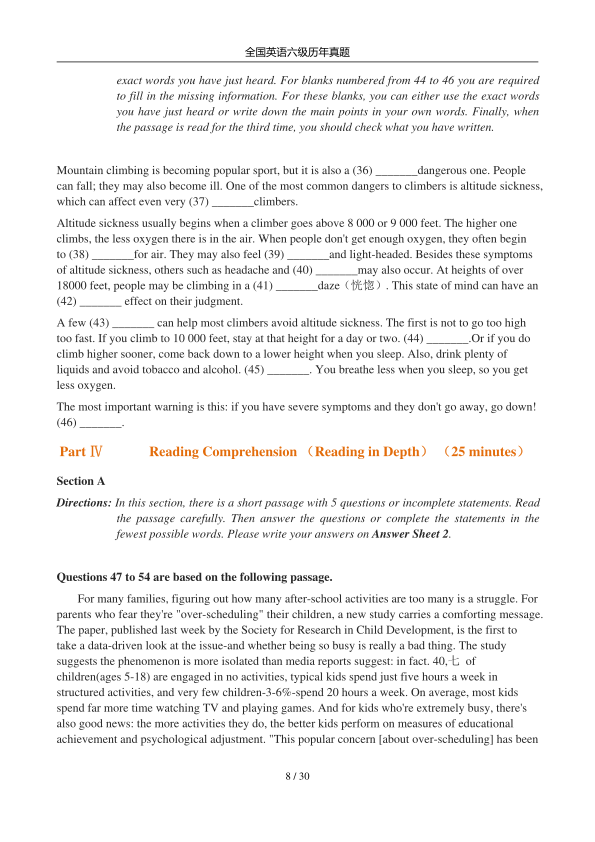
全国英语六级历年真题
8 / 30
exact words you have just heard. For blanks numbered from 44 to 46 you are required
to fill in the missing information. For these blanks, you can either use the exact words
you have just heard or write down the main points in your own words. Finally, when
the passage is read for the third time, you should check what you have written.
Mountain climbing is becoming popular sport, but it is also a (36) _______dangerous one. People
can fall; they may also become ill. One of the most common dangers to climbers is altitude sickness,
which can affect even very (37) _______climbers.
Altitude sickness usually begins when a climber goes above 8 000 or 9 000 feet. The higher one
climbs, the less oxygen there is in the air. When people don't get enough oxygen, they often begin
to (38) _______for air. They may also feel (39) _______and light-headed. Besides these symptoms
of altitude sickness, others such as headache and (40) _______may also occur. At heights of over
18000 feet, people may be climbing in a (41) _______daze（恍惚）. This state of mind can have an
(42) _______ effect on their judgment.
A few (43) _______ can help most climbers avoid altitude sickness. The first is not to go too high
too fast. If you climb to 10 000 feet, stay at that height for a day or two. (44) _______.Or if you do
climb higher sooner, come back down to a lower height when you sleep. Also, drink plenty of
liquids and avoid tobacco and alcohol. (45) _______. You breathe less when you sleep, so you get
less oxygen.
The most important warning is this: if you have severe symptoms and they don't go away, go down!
(46) _______.
Part Ⅳ
Reading Comprehension （Reading in Depth）（25 minutes）
Section A
Directions: In this section, there is a short passage with 5 questions or incomplete statements. Read
the passage carefully. Then answer the questions or complete the statements in the
fewest possible words. Please write your answers on Answer Sheet 2.
Questions 47 to 54 are based on the following passage.
For many families, figuring out how many after-school activities are too many is a struggle. For
parents who fear they're "over-scheduling" their children, a new study carries a comforting message.
The paper, published last week by the Society for Research in Child Development, is the first to
take a data-driven look at the issue-and whether being so busy is really a bad thing. The study
suggests the phenomenon is more isolated than media reports suggest: in fact. 40,七of
children(ages 5-18) are engaged in no activities, typical kids spend just five hours a week in
structured activities, and very few children-3-6%-spend 20 hours a week. On average, most kids
spend far more time watching TV and playing games. And for kids who're extremely busy, there's
also good news: the more activities they do, the better kids perform on measures of educational
achievement and psychological adjustment. "This popular concern [about over-scheduling] has been
查看 / 复制本页文字
全国英语六级历年真题 8 / 30 exact words you have just heard. For blanks numbered from 44 to 46 you are required to fill in the missing information. For these blanks, you can either use the exact words you have just heard or write down the main points in your own words. Finally, when the passage is read for the third time, you should check what you have written. Mountain climbing is becoming popular sport, but it is also a (36) _______dangerous one. People can fall; they may also become ill. One of the most common dangers to climbers is altitude sickness, which can affect even very (37) _______climbers. Altitude sickness usually begins when a climber goes above 8 000 or 9 000 feet. The higher one climbs, the less oxygen there is in the air. When people don't get enough oxygen, they often begin to (38) _______for air. They may also feel (39) _______and light-headed. Besides these symptoms of altitude sickness, others such as headache and (40) _______may also occur. At heights of over 18000 feet, people may be climbing in a (41) _______daze（恍惚）. This state of mind can have an (42) _______ effect on their judgment. A few (43) _______ can help most climbers avoid altitude sickness. The first is not to go too high too fast. If you climb to 10 000 feet, stay at that height for a day or two. (44) _______.Or if you do climb higher sooner, come back down to a lower height when you sleep. Also, drink plenty of liquids and avoid tobacco and alcohol. (45) _______. You breathe less when you sleep, so you get less oxygen. The most important warning is this: if you have severe symptoms and they don't go away, go down! (46) _______. Part Ⅳ Reading Comprehension （Reading in Depth）（25 minutes） Section A Directions: In this section, there is a short passage with 5 questions or incomplete statements. Read the passage carefully. Then answer the questions or complete the statements in the fewest possible words. Please write your answers on Answer Sheet 2. Questions 47 to 54 are based on the following passage. For many families, figuring out how many after-school activities are too many is a struggle. For parents who fear they're "over-scheduling" their children, a new study carries a comforting message. The paper, published last week by the Society for Research in Child Development, is the first to take a data-driven look at the issue-and whether being so busy is really a bad thing. The study suggests the phenomenon is more isolated than media reports suggest: in fact. 40,七of children(ages 5-18) are engaged in no activities, typical kids spend just five hours a week in structured activities, and very few children-3-6%-spend 20 hours a week. On average, most kids spend far more time watching TV and playing games. And for kids who're extremely busy, there's also good news: the more activities they do, the better kids perform on measures of educational achievement and psychological adjustment. "This popular concern [about over-scheduling] has been
第 9 / 30 页
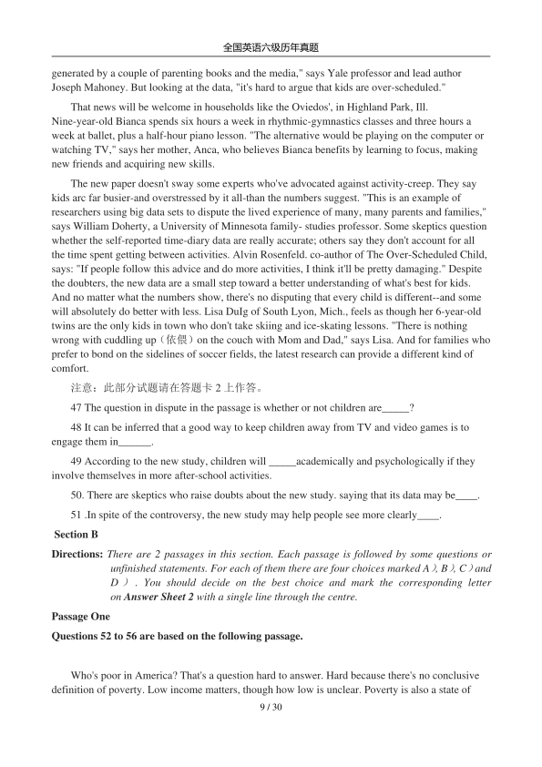
全国英语六级历年真题
9 / 30
generated by a couple of parenting books and the media," says Yale professor and lead author
Joseph Mahoney. But looking at the data, "it's hard to argue that kids are over-scheduled."
That news will be welcome in households like the Oviedos', in Highland Park, Ill.
Nine-year-old Bianca spends six hours a week in rhythmic-gymnastics classes and three hours a
week at ballet, plus a half-hour piano lesson. "The alternative would be playing on the computer or
watching TV," says her mother, Anca, who believes Bianca benefits by learning to focus, making
new friends and acquiring new skills.
The new paper doesn't sway some experts who've advocated against activity-creep. They say
kids arc far busier-and overstressed by it all-than the numbers suggest. "This is an example of
researchers using big data sets to dispute the lived experience of many, many parents and families,"
says William Doherty, a University of Minnesota family- studies professor. Some skeptics question
whether the self-reported time-diary data are really accurate; others say they don't account for all
the time spent getting between activities. Alvin Rosenfeld. co-author of The Over-Scheduled Child,
says: "If people follow this advice and do more activities, I think it'll be pretty damaging." Despite
the doubters, the new data are a small step toward a better understanding of what's best for kids.
And no matter what the numbers show, there's no disputing that every child is different--and some
will absolutely do better with less. Lisa DuIg of South Lyon, Mich., feels as though her 6-year-old
twins are the only kids in town who don't take skiing and ice-skating lessons. "There is nothing
wrong with cuddling up（依偎）on the couch with Mom and Dad," says Lisa. And for families who
prefer to bond on the sidelines of soccer fields, the latest research can provide a different kind of
comfort.
注意：此部分试题请在答题卡2 上作答。
47 The question in dispute in the passage is whether or not children are_____?
48 It can be inferred that a good way to keep children away from TV and video games is to
engage them in______.
49 According to the new study, children will _____academically and psychologically if they
involve themselves in more after-school activities.
50. There are skeptics who raise doubts about the new study. saying that its data may be____.
51 .In spite of the controversy, the new study may help people see more clearly____.
Section B
Directions: There are 2 passages in this section. Each passage is followed by some questions or
unfinished statements. For each of them there are four choices marked A）, B）, C）and
D ）. You should decide on the best choice and mark the corresponding letter
on Answer Sheet 2 with a single line through the centre.
Passage One
Questions 52 to 56 are based on the following passage.
Who's poor in America? That's a question hard to answer. Hard because there's no conclusive
definition of poverty. Low income matters, though how low is unclear. Poverty is also a state of
查看 / 复制本页文字
全国英语六级历年真题 9 / 30 generated by a couple of parenting books and the media," says Yale professor and lead author Joseph Mahoney. But looking at the data, "it's hard to argue that kids are over-scheduled." That news will be welcome in households like the Oviedos', in Highland Park, Ill. Nine-year-old Bianca spends six hours a week in rhythmic-gymnastics classes and three hours a week at ballet, plus a half-hour piano lesson. "The alternative would be playing on the computer or watching TV," says her mother, Anca, who believes Bianca benefits by learning to focus, making new friends and acquiring new skills. The new paper doesn't sway some experts who've advocated against activity-creep. They say kids arc far busier-and overstressed by it all-than the numbers suggest. "This is an example of researchers using big data sets to dispute the lived experience of many, many parents and families," says William Doherty, a University of Minnesota family- studies professor. Some skeptics question whether the self-reported time-diary data are really accurate; others say they don't account for all the time spent getting between activities. Alvin Rosenfeld. co-author of The Over-Scheduled Child, says: "If people follow this advice and do more activities, I think it'll be pretty damaging." Despite the doubters, the new data are a small step toward a better understanding of what's best for kids. And no matter what the numbers show, there's no disputing that every child is different--and some will absolutely do better with less. Lisa DuIg of South Lyon, Mich., feels as though her 6-year-old twins are the only kids in town who don't take skiing and ice-skating lessons. "There is nothing wrong with cuddling up（依偎）on the couch with Mom and Dad," says Lisa. And for families who prefer to bond on the sidelines of soccer fields, the latest research can provide a different kind of comfort. 注意：此部分试题请在答题卡2 上作答。 47 The question in dispute in the passage is whether or not children are_____? 48 It can be inferred that a good way to keep children away from TV and video games is to engage them in______. 49 According to the new study, children will _____academically and psychologically if they involve themselves in more after-school activities. 50. There are skeptics who raise doubts about the new study. saying that its data may be____. 51 .In spite of the controversy, the new study may help people see more clearly____. Section B Directions: There are 2 passages in this section. Each passage is followed by some questions or unfinished statements. For each of them there are four choices marked A）, B）, C）and D ）. You should decide on the best choice and mark the corresponding letter on Answer Sheet 2 with a single line through the centre. Passage One Questions 52 to 56 are based on the following passage. Who's poor in America? That's a question hard to answer. Hard because there's no conclusive definition of poverty. Low income matters, though how low is unclear. Poverty is also a state of
第 10 / 30 页
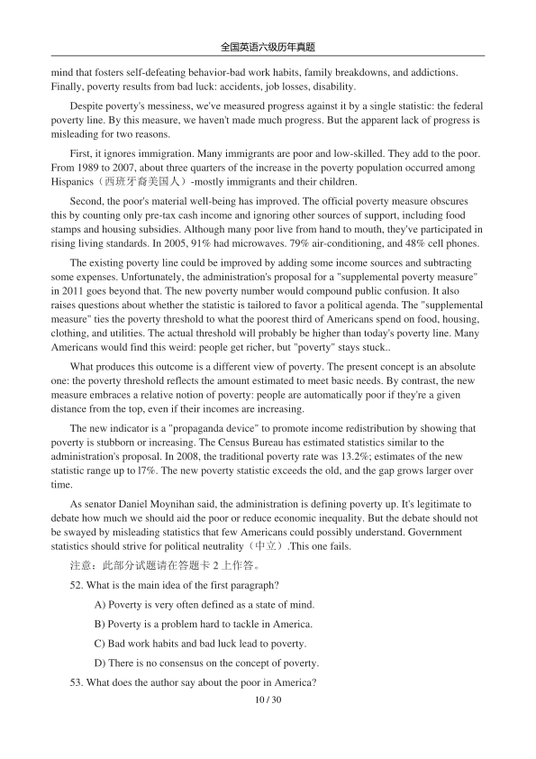
全国英语六级历年真题
10 / 30
mind that fosters self-defeating behavior-bad work habits, family breakdowns, and addictions.
Finally, poverty results from bad luck: accidents, job losses, disability.
Despite poverty's messiness, we've measured progress against it by a single statistic: the federal
poverty line. By this measure, we haven't made much progress. But the apparent lack of progress is
misleading for two reasons.
First, it ignores immigration. Many immigrants are poor and low-skilled. They add to the poor.
From 1989 to 2007, about three quarters of the increase in the poverty population occurred among
Hispanics（西班牙裔美国人）-mostly immigrants and their children.
Second, the poor's material well-being has improved. The official poverty measure obscures
this by counting only pre-tax cash income and ignoring other sources of support, including food
stamps and housing subsidies. Although many poor live from hand to mouth, they've participated in
rising living standards. In 2005, 91% had microwaves. 79% air-conditioning, and 48% cell phones.
The existing poverty line could be improved by adding some income sources and subtracting
some expenses. Unfortunately, the administration's proposal for a "supplemental poverty measure"
in 2011 goes beyond that. The new poverty number would compound public confusion. It also
raises questions about whether the statistic is tailored to favor a political agenda. The "supplemental
measure" ties the poverty threshold to what the poorest third of Americans spend on food, housing,
clothing, and utilities. The actual threshold will probably be higher than today's poverty line. Many
Americans would find this weird: people get richer, but "poverty" stays stuck..
What produces this outcome is a different view of poverty. The present concept is an absolute
one: the poverty threshold reflects the amount estimated to meet basic needs. By contrast, the new
measure embraces a relative notion of poverty: people are automatically poor if they're a given
distance from the top, even if their incomes are increasing.
The new indicator is a "propaganda device" to promote income redistribution by showing that
poverty is stubborn or increasing. The Census Bureau has estimated statistics similar to the
administration's proposal. In 2008, the traditional poverty rate was 13.2%; estimates of the new
statistic range up to l7%. The new poverty statistic exceeds the old, and the gap grows larger over
time.
As senator Daniel Moynihan said, the administration is defining poverty up. It's legitimate to
debate how much we should aid the poor or reduce economic inequality. But the debate should not
be swayed by misleading statistics that few Americans could possibly understand. Government
statistics should strive for political neutrality（中立）.This one fails.
注意：此部分试题请在答题卡2 上作答。
52. What is the main idea of the first paragraph?
A) Poverty is very often defined as a state of mind.
B) Poverty is a problem hard to tackle in America.
C) Bad work habits and bad luck lead to poverty.
D) There is no consensus on the concept of poverty.
53. What does the author say about the poor in America?
查看 / 复制本页文字
全国英语六级历年真题 10 / 30 mind that fosters self-defeating behavior-bad work habits, family breakdowns, and addictions. Finally, poverty results from bad luck: accidents, job losses, disability. Despite poverty's messiness, we've measured progress against it by a single statistic: the federal poverty line. By this measure, we haven't made much progress. But the apparent lack of progress is misleading for two reasons. First, it ignores immigration. Many immigrants are poor and low-skilled. They add to the poor. From 1989 to 2007, about three quarters of the increase in the poverty population occurred among Hispanics（西班牙裔美国人）-mostly immigrants and their children. Second, the poor's material well-being has improved. The official poverty measure obscures this by counting only pre-tax cash income and ignoring other sources of support, including food stamps and housing subsidies. Although many poor live from hand to mouth, they've participated in rising living standards. In 2005, 91% had microwaves. 79% air-conditioning, and 48% cell phones. The existing poverty line could be improved by adding some income sources and subtracting some expenses. Unfortunately, the administration's proposal for a "supplemental poverty measure" in 2011 goes beyond that. The new poverty number would compound public confusion. It also raises questions about whether the statistic is tailored to favor a political agenda. The "supplemental measure" ties the poverty threshold to what the poorest third of Americans spend on food, housing, clothing, and utilities. The actual threshold will probably be higher than today's poverty line. Many Americans would find this weird: people get richer, but "poverty" stays stuck.. What produces this outcome is a different view of poverty. The present concept is an absolute one: the poverty threshold reflects the amount estimated to meet basic needs. By contrast, the new measure embraces a relative notion of poverty: people are automatically poor if they're a given distance from the top, even if their incomes are increasing. The new indicator is a "propaganda device" to promote income redistribution by showing that poverty is stubborn or increasing. The Census Bureau has estimated statistics similar to the administration's proposal. In 2008, the traditional poverty rate was 13.2%; estimates of the new statistic range up to l7%. The new poverty statistic exceeds the old, and the gap grows larger over time. As senator Daniel Moynihan said, the administration is defining poverty up. It's legitimate to debate how much we should aid the poor or reduce economic inequality. But the debate should not be swayed by misleading statistics that few Americans could possibly understand. Government statistics should strive for political neutrality（中立）.This one fails. 注意：此部分试题请在答题卡2 上作答。 52. What is the main idea of the first paragraph? A) Poverty is very often defined as a state of mind. B) Poverty is a problem hard to tackle in America. C) Bad work habits and bad luck lead to poverty. D) There is no consensus on the concept of poverty. 53. What does the author say about the poor in America?
第 11 / 30 页
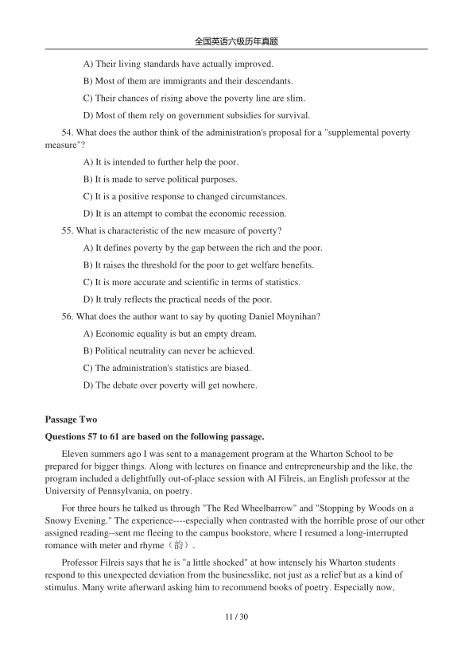
全国英语六级历年真题
11 / 30
A) Their living standards have actually improved.
B) Most of them are immigrants and their descendants.
C) Their chances of rising above the poverty line are slim.
D) Most of them rely on government subsidies for survival.
54. What does the author think of the administration's proposal for a "supplemental poverty
measure"?
A) It is intended to further help the poor.
B) It is made to serve political purposes.
C) It is a positive response to changed circumstances.
D) It is an attempt to combat the economic recession.
55. What is characteristic of the new measure of poverty?
A) It defines poverty by the gap between the rich and the poor.
B) It raises the threshold for the poor to get welfare benefits.
C) It is more accurate and scientific in terms of statistics.
D) It truly reflects the practical needs of the poor.
56. What does the author want to say by quoting Daniel Moynihan?
A) Economic equality is but an empty dream.
B) Political neutrality can never be achieved.
C) The administration's statistics are biased.
D) The debate over poverty will get nowhere.
Passage Two
Questions 57 to 61 are based on the following passage.
Eleven summers ago I was sent to a management program at the Wharton School to be
prepared for bigger things. Along with lectures on finance and entrepreneurship and the like, the
program included a delightfully out-of-place session with Al Filreis, an English professor at the
University of Pennsylvania, on poetry.
For three hours he talked us through "The Red Wheelbarrow" and "Stopping by Woods on a
Snowy Evening." The experience----especially when contrasted with the horrible prose of our other
assigned reading--sent me fleeing to the campus bookstore, where I resumed a long-interrupted
romance with meter and rhyme（韵）.
Professor Filreis says that he is "a little shocked" at how intensely his Wharton students
respond to this unexpected deviation from the businesslike, not just as a relief but as a kind of
stimulus. Many write afterward asking him to recommend books of poetry. Especially now,
查看 / 复制本页文字
全国英语六级历年真题 11 / 30 A) Their living standards have actually improved. B) Most of them are immigrants and their descendants. C) Their chances of rising above the poverty line are slim. D) Most of them rely on government subsidies for survival. 54. What does the author think of the administration's proposal for a "supplemental poverty measure"? A) It is intended to further help the poor. B) It is made to serve political purposes. C) It is a positive response to changed circumstances. D) It is an attempt to combat the economic recession. 55. What is characteristic of the new measure of poverty? A) It defines poverty by the gap between the rich and the poor. B) It raises the threshold for the poor to get welfare benefits. C) It is more accurate and scientific in terms of statistics. D) It truly reflects the practical needs of the poor. 56. What does the author want to say by quoting Daniel Moynihan? A) Economic equality is but an empty dream. B) Political neutrality can never be achieved. C) The administration's statistics are biased. D) The debate over poverty will get nowhere. Passage Two Questions 57 to 61 are based on the following passage. Eleven summers ago I was sent to a management program at the Wharton School to be prepared for bigger things. Along with lectures on finance and entrepreneurship and the like, the program included a delightfully out-of-place session with Al Filreis, an English professor at the University of Pennsylvania, on poetry. For three hours he talked us through "The Red Wheelbarrow" and "Stopping by Woods on a Snowy Evening." The experience----especially when contrasted with the horrible prose of our other assigned reading--sent me fleeing to the campus bookstore, where I resumed a long-interrupted romance with meter and rhyme（韵）. Professor Filreis says that he is "a little shocked" at how intensely his Wharton students respond to this unexpected deviation from the businesslike, not just as a relief but as a kind of stimulus. Many write afterward asking him to recommend books of poetry. Especially now,
第 12 / 30 页
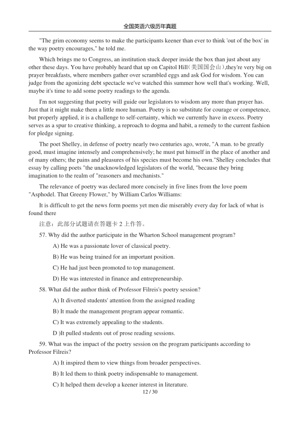
全国英语六级历年真题
12 / 30
"The grim economy seems to make the participants keener than ever to think 'out of the box' in
the way poetry encourages," he told me.
Which brings me to Congress, an institution stuck deeper inside the box than just about any
other these days. You have probably heard that up on Capitol Hill（美国国会山）,they're very big on
prayer breakfasts, where members gather over scrambled eggs and ask God for wisdom. You can
judge from the agonizing debt spectacle we've watched this summer how well that's working. Well,
maybe it's time to add some poetry readings to the agenda.
I'm not suggesting that poetry will guide our legislators to wisdom any more than prayer has.
Just that it might make them a little more human. Poetry is no substitute for courage or competence,
but properly applied, it is a challenge to self-certainty, which we currently have in excess. Poetry
serves as a spur to creative thinking, a reproach to dogma and habit, a remedy to the current fashion
for pledge signing.
The poet Shelley, in defense of poetry nearly two centuries ago, wrote, "A man. to be greatly
good, must imagine intensely and comprehensively; he must put himself in the place of another and
of many others; the pains and pleasures of his species must become his own."Shelley concludes that
essay by calling poets "the unacknowledged legislators of the world, "because they bring
imagination to the realm of "reasoners and mechanists."
The relevance of poetry was declared more concisely in five lines from the love poem
"Asphodel. That Greeny Flower," by William Carlos Williams:
It is difficult to get the news form poems yet men die miserably every day for lack of what is
found there
注意：此部分试题请在答题卡2 上作答。
57. Why did the author participate in the Wharton School management program?
A) He was a passionate lover of classical poetry.
B) He was being trained for an important position.
C) He had just been promoted to top management.
D) He was interested in finance and entrepreneurship.
58. What did the author think of Professor Filreis's poetry session?
A) It diverted students' attention from the assigned reading
B) It made the management program appear romantic.
C) It was extremely appealing to the students.
D )It pulled students out of prose reading sessions.
59. What was the impact of the poetry session on the program participants according to
Professor Filreis?
A) It inspired them to view things from broader perspectives.
B) It led them to think poetry indispensable to management.
C) It helped them develop a keener interest in literature.
查看 / 复制本页文字
全国英语六级历年真题 12 / 30 "The grim economy seems to make the participants keener than ever to think 'out of the box' in the way poetry encourages," he told me. Which brings me to Congress, an institution stuck deeper inside the box than just about any other these days. You have probably heard that up on Capitol Hill（美国国会山）,they're very big on prayer breakfasts, where members gather over scrambled eggs and ask God for wisdom. You can judge from the agonizing debt spectacle we've watched this summer how well that's working. Well, maybe it's time to add some poetry readings to the agenda. I'm not suggesting that poetry will guide our legislators to wisdom any more than prayer has. Just that it might make them a little more human. Poetry is no substitute for courage or competence, but properly applied, it is a challenge to self-certainty, which we currently have in excess. Poetry serves as a spur to creative thinking, a reproach to dogma and habit, a remedy to the current fashion for pledge signing. The poet Shelley, in defense of poetry nearly two centuries ago, wrote, "A man. to be greatly good, must imagine intensely and comprehensively; he must put himself in the place of another and of many others; the pains and pleasures of his species must become his own."Shelley concludes that essay by calling poets "the unacknowledged legislators of the world, "because they bring imagination to the realm of "reasoners and mechanists." The relevance of poetry was declared more concisely in five lines from the love poem "Asphodel. That Greeny Flower," by William Carlos Williams: It is difficult to get the news form poems yet men die miserably every day for lack of what is found there 注意：此部分试题请在答题卡2 上作答。 57. Why did the author participate in the Wharton School management program? A) He was a passionate lover of classical poetry. B) He was being trained for an important position. C) He had just been promoted to top management. D) He was interested in finance and entrepreneurship. 58. What did the author think of Professor Filreis's poetry session? A) It diverted students' attention from the assigned reading B) It made the management program appear romantic. C) It was extremely appealing to the students. D )It pulled students out of prose reading sessions. 59. What was the impact of the poetry session on the program participants according to Professor Filreis? A) It inspired them to view things from broader perspectives. B) It led them to think poetry indispensable to management. C) It helped them develop a keener interest in literature.
第 13 / 30 页
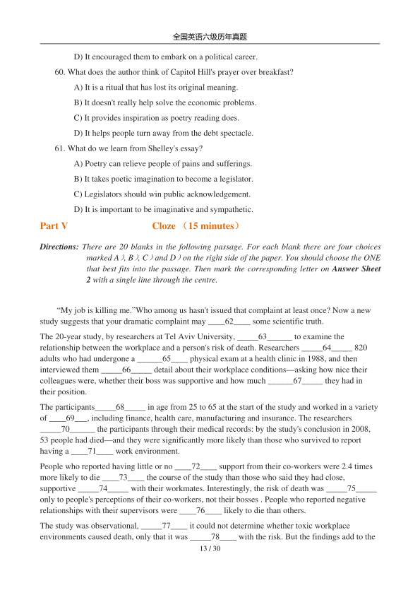
全国英语六级历年真题
13 / 30
D) It encouraged them to embark on a political career.
60. What does the author think of Capitol Hill's prayer over breakfast?
A) It is a ritual that has lost its original meaning.
B) It doesn't really help solve the economic problems.
C) It provides inspiration as poetry reading does.
D) It helps people turn away from the debt spectacle.
61. What do we learn from Shelley's essay?
A) Poetry can relieve people of pains and sufferings.
B) It takes poetic imagination to become a legislator.
C) Legislators should win public acknowledgement.
D) It is important to be imaginative and sympathetic.
Part V
Cloze （15 minutes）
Directions: There are 20 blanks in the following passage. For each blank there are four choices
marked A）, B）, C）and D）on the right side of the paper. You should choose the ONE
that best fits into the passage. Then mark the corresponding letter on Answer Sheet
2 with a single line through the centre.
“My job is killing me.”Who among us hasn't issued that complaint at least once? Now a new
study suggests that your dramatic complaint may ____62____ some scientific truth.
The 20-year study, by researchers at Tel Aviv University, _____63______ to examine the
relationship between the workplace and a person's risk of death. Researchers _____64_____ 820
adults who had undergone a ______65____ physical exam at a health clinic in 1988, and then
interviewed them _____66_____ detail about their workplace conditions—asking how nice their
colleagues were, whether their boss was supportive and how much ______67_____ they had in
their position.
The participants_____68_____ in age from 25 to 65 at the start of the study and worked in a variety
of ____69___, including finance, health care, manufacturing and insurance. The researchers
_____70______ the participants through their medical records: by the study's conclusion in 2008,
53 people had died—and they were significantly more likely than those who survived to report
having a ____71____ work environment.
People who reported having little or no ____72____ support from their co-workers were 2.4 times
more likely to die ____73____ the course of the study than those who said they had close,
supportive _____74_____ with their workmates. Interestingly, the risk of death was _____75_____
only to people's perceptions of their co-workers, not their bosses . People who reported negative
relationships with their supervisors were ____76____ likely to die than others.
The study was observational, _____77____ it could not determine whether toxic workplace
environments caused death, only that it was _____78____ with the risk. But the findings add to the
查看 / 复制本页文字
全国英语六级历年真题 13 / 30 D) It encouraged them to embark on a political career. 60. What does the author think of Capitol Hill's prayer over breakfast? A) It is a ritual that has lost its original meaning. B) It doesn't really help solve the economic problems. C) It provides inspiration as poetry reading does. D) It helps people turn away from the debt spectacle. 61. What do we learn from Shelley's essay? A) Poetry can relieve people of pains and sufferings. B) It takes poetic imagination to become a legislator. C) Legislators should win public acknowledgement. D) It is important to be imaginative and sympathetic. Part V Cloze （15 minutes） Directions: There are 20 blanks in the following passage. For each blank there are four choices marked A）, B）, C）and D）on the right side of the paper. You should choose the ONE that best fits into the passage. Then mark the corresponding letter on Answer Sheet 2 with a single line through the centre. “My job is killing me.”Who among us hasn't issued that complaint at least once? Now a new study suggests that your dramatic complaint may ____62____ some scientific truth. The 20-year study, by researchers at Tel Aviv University, _____63______ to examine the relationship between the workplace and a person's risk of death. Researchers _____64_____ 820 adults who had undergone a ______65____ physical exam at a health clinic in 1988, and then interviewed them _____66_____ detail about their workplace conditions—asking how nice their colleagues were, whether their boss was supportive and how much ______67_____ they had in their position. The participants_____68_____ in age from 25 to 65 at the start of the study and worked in a variety of ____69___, including finance, health care, manufacturing and insurance. The researchers _____70______ the participants through their medical records: by the study's conclusion in 2008, 53 people had died—and they were significantly more likely than those who survived to report having a ____71____ work environment. People who reported having little or no ____72____ support from their co-workers were 2.4 times more likely to die ____73____ the course of the study than those who said they had close, supportive _____74_____ with their workmates. Interestingly, the risk of death was _____75_____ only to people's perceptions of their co-workers, not their bosses . People who reported negative relationships with their supervisors were ____76____ likely to die than others. The study was observational, _____77____ it could not determine whether toxic workplace environments caused death, only that it was _____78____ with the risk. But the findings add to the
第 14 / 30 页
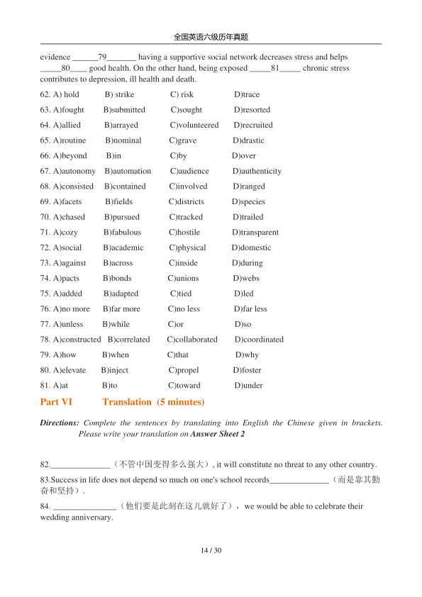
全国英语六级历年真题
14 / 30
evidence ______79_______ having a supportive social network decreases stress and helps
_____80____ good health. On the other hand, being exposed _____81_____ chronic stress
contributes to depression, ill health and death.
62. A) hold
B) strike
C) risk
D)trace
63. A)fought
B)submitted
C)sought
D)resorted
64. A)allied
B)arrayed
C)volunteered
D)recruited
65. A)routine
B)nominal
C)grave
D)drastic
66. A)beyond
B)in
C)by
D)over
67. A)autonomy
B)automation
C)audience
D)authenticity
68. A)consisted
B)contained
C)involved
D)ranged
69. A)facets
B)fields
C)districts
D)species
70. A)chased
B)pursued
C)tracked
D)trailed
71. A)cozy
B)fabulous
C)hostile
D)transparent
72. A)social
B)academic
C)physical
D)domestic
73. A)against
B)across
C)inside
D)during
74. A)pacts
B)bonds
C)unions
D)webs
75. A)added
B)adapted
C)tied
D)led
76. A)no more
B)far more
C)no less
D)far less
77. A)unless
B)while
C)or
D)so
78. A)constructed B)correlated
C)collaborated
D)coordinated
79. A)how
B)when
C)that
D)why
80. A)elevate
B)inject
C)propel
D)foster
81. A)at
B)to
C)toward
D)under
Part VI
Translation (5 minutes)
Directions: Complete the sentences by translating into English the Chinese given in brackets.
Please write your translation on Answer Sheet 2
82.______________（不管中国变得多么强大）, it will constitute no threat to any other country.
83.Success in life does not depend so much on one's school records______________（而是靠其勤
奋和坚持）.
84. _______________（他们要是此刻在这儿就好了），we would be able to celebrate their
wedding anniversary.
查看 / 复制本页文字
全国英语六级历年真题 14 / 30 evidence ______79_______ having a supportive social network decreases stress and helps _____80____ good health. On the other hand, being exposed _____81_____ chronic stress contributes to depression, ill health and death. 62. A) hold B) strike C) risk D)trace 63. A)fought B)submitted C)sought D)resorted 64. A)allied B)arrayed C)volunteered D)recruited 65. A)routine B)nominal C)grave D)drastic 66. A)beyond B)in C)by D)over 67. A)autonomy B)automation C)audience D)authenticity 68. A)consisted B)contained C)involved D)ranged 69. A)facets B)fields C)districts D)species 70. A)chased B)pursued C)tracked D)trailed 71. A)cozy B)fabulous C)hostile D)transparent 72. A)social B)academic C)physical D)domestic 73. A)against B)across C)inside D)during 74. A)pacts B)bonds C)unions D)webs 75. A)added B)adapted C)tied D)led 76. A)no more B)far more C)no less D)far less 77. A)unless B)while C)or D)so 78. A)constructed B)correlated C)collaborated D)coordinated 79. A)how B)when C)that D)why 80. A)elevate B)inject C)propel D)foster 81. A)at B)to C)toward D)under Part VI Translation (5 minutes) Directions: Complete the sentences by translating into English the Chinese given in brackets. Please write your translation on Answer Sheet 2 82.______________（不管中国变得多么强大）, it will constitute no threat to any other country. 83.Success in life does not depend so much on one's school records______________（而是靠其勤 奋和坚持）. 84. _______________（他们要是此刻在这儿就好了），we would be able to celebrate their wedding anniversary.
第 15 / 30 页
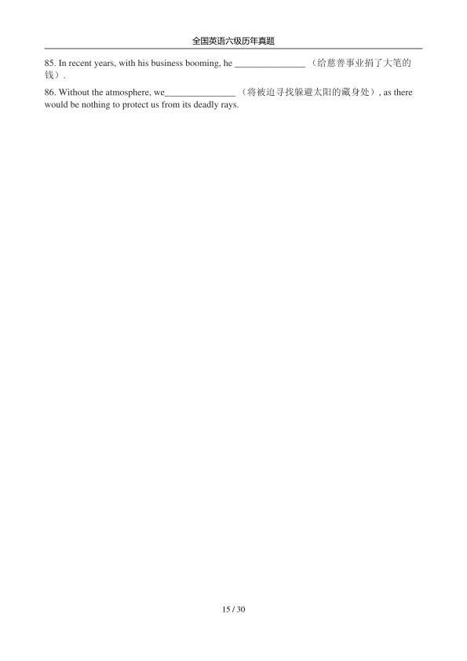
全国英语六级历年真题
15 / 30
85. In recent years, with his business booming, he _______________ （给慈善事业捐了大笔的
钱）.
86. Without the atmosphere, we_______________ （将被迫寻找躲避太阳的藏身处）, as there
would be nothing to protect us from its deadly rays.
查看 / 复制本页文字
全国英语六级历年真题 15 / 30 85. In recent years, with his business booming, he _______________ （给慈善事业捐了大笔的 钱）. 86. Without the atmosphere, we_______________ （将被迫寻找躲避太阳的藏身处）, as there would be nothing to protect us from its deadly rays.
第 16 / 30 页
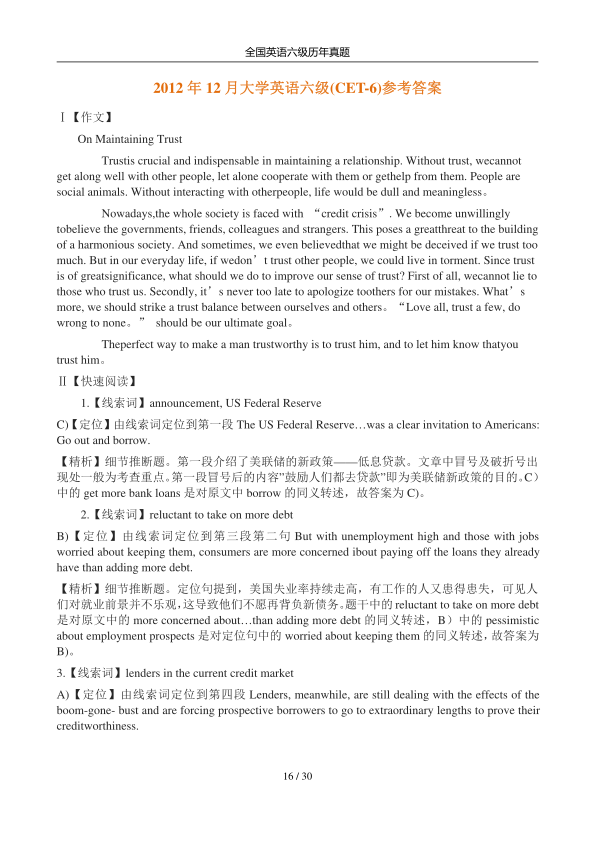
全国英语六级历年真题
16 / 30
2012 年12 月大学英语六级(CET-6)参考答案
Ⅰ【作文】
On Maintaining Trust
Trustis crucial and indispensable in maintaining a relationship. Without trust, wecannot
get along well with other people, let alone cooperate with them or gethelp from them. People are
social animals. Without interacting with otherpeople, life would be dull and meaningless。
Nowadays,the whole society is faced with “credit crisis”. We become unwillingly
tobelieve the governments, friends, colleagues and strangers. This poses a greatthreat to the building
of a harmonious society. And sometimes, we even believedthat we might be deceived if we trust too
much. But in our everyday life, if wedon’t trust other people, we could live in torment. Since trust
is of greatsignificance, what should we do to improve our sense of trust? First of all, wecannot lie to
those who trust us. Secondly, it’s never too late to apologize toothers for our mistakes. What’s
more, we should strike a trust balance between ourselves and others。“Love all, trust a few, do
wrong to none。” should be our ultimate goal。
Theperfect way to make a man trustworthy is to trust him, and to let him know thatyou
trust him。
Ⅱ【快速阅读】
1.【线索词】announcement, US Federal Reserve
C)【定位】由线索词定位到第一段The US Federal Reserve…was a clear invitation to Americans:
Go out and borrow.
【精析】细节推断题。第一段介绍了美联储的新政策——低息贷款。文章中冒号及破折号出
现处一般为考查重点。第一段冒号后的内容”鼓励人们都去贷款”即为美联储新政策的目的。C）
中的get more bank loans 是对原文中borrow 的同义转述，故答案为C)。
2.【线索词】reluctant to take on more debt
B)【定位】由线索词定位到第三段第二句But with unemployment high and those with jobs
worried about keeping them, consumers are more concerned ibout paying off the loans they already
have than adding more debt.
【精析】细节推断题。定位句提到，美国失业率持续走高，有工作的人又患得患失，可见人
们对就业前景并不乐观，这导致他们不愿再背负新债务。题干中的reluctant to take on more debt
是对原文中的more concerned about…than adding more debt 的同义转述，B）中的pessimistic
about employment prospects 是对定位句中的worried about keeping them 的同义转述，故答案为
B)。
3.【线索词】lenders in the current credit market
A)【定位】由线索词定位到第四段Lenders, meanwhile, are still dealing with the effects of the
boom-gone- bust and are forcing prospective borrowers to go to extraordinary lengths to prove their
creditworthiness.
查看 / 复制本页文字
全国英语六级历年真题 16 / 30 2012 年12 月大学英语六级(CET-6)参考答案 Ⅰ【作文】 On Maintaining Trust Trustis crucial and indispensable in maintaining a relationship. Without trust, wecannot get along well with other people, let alone cooperate with them or gethelp from them. People are social animals. Without interacting with otherpeople, life would be dull and meaningless。 Nowadays,the whole society is faced with “credit crisis”. We become unwillingly tobelieve the governments, friends, colleagues and strangers. This poses a greatthreat to the building of a harmonious society. And sometimes, we even believedthat we might be deceived if we trust too much. But in our everyday life, if wedon’t trust other people, we could live in torment. Since trust is of greatsignificance, what should we do to improve our sense of trust? First of all, wecannot lie to those who trust us. Secondly, it’s never too late to apologize toothers for our mistakes. What’s more, we should strike a trust balance between ourselves and others。“Love all, trust a few, do wrong to none。” should be our ultimate goal。 Theperfect way to make a man trustworthy is to trust him, and to let him know thatyou trust him。 Ⅱ【快速阅读】 1.【线索词】announcement, US Federal Reserve C)【定位】由线索词定位到第一段The US Federal Reserve…was a clear invitation to Americans: Go out and borrow. 【精析】细节推断题。第一段介绍了美联储的新政策——低息贷款。文章中冒号及破折号出 现处一般为考查重点。第一段冒号后的内容”鼓励人们都去贷款”即为美联储新政策的目的。C） 中的get more bank loans 是对原文中borrow 的同义转述，故答案为C)。 2.【线索词】reluctant to take on more debt B)【定位】由线索词定位到第三段第二句But with unemployment high and those with jobs worried about keeping them, consumers are more concerned ibout paying off the loans they already have than adding more debt. 【精析】细节推断题。定位句提到，美国失业率持续走高，有工作的人又患得患失，可见人 们对就业前景并不乐观，这导致他们不愿再背负新债务。题干中的reluctant to take on more debt 是对原文中的more concerned about…than adding more debt 的同义转述，B）中的pessimistic about employment prospects 是对定位句中的worried about keeping them 的同义转述，故答案为 B)。 3.【线索词】lenders in the current credit market A)【定位】由线索词定位到第四段Lenders, meanwhile, are still dealing with the effects of the boom-gone- bust and are forcing prospective borrowers to go to extraordinary lengths to prove their creditworthiness.
第 17 / 30 页
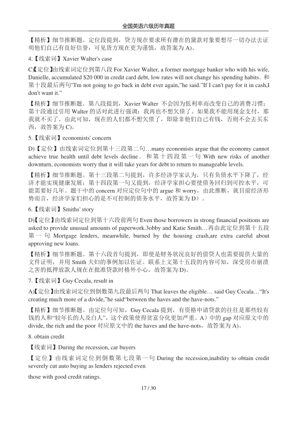
全国英语六级历年真题
17 / 30
【精析】细节推断题。定位段提到，贷方现在要求所有潜在的黛款对象要想尽一切办法去证
明他们自己有良好信誉，可见货方现在更为谨慎，故答案为A)。
4.【线索词】Xavier Walter's case
C)【定位】由线索词定位到第八段For Xavier Walter, a former mortgage banker who with his wife,
Danielle, accumulated $20 000 in credit card debt, low rates will not change his spending habits．和
第十段最后两句”I'm not going to go back in debt ever again,”he said.”If I can't pay for it in cash,I
don't want it.”
【精析】细节推断题。第八段提到，Xavier Walter 不会因为低利率而改变自己的消费习惯；
第十段通过引用Walter 的话对此进行强调：我再也不想欠债了。如果我不能用现金支付，那
我就不买了。由此可知，现在的人们都不想欠债了，即除非他们自己有钱，否则不会去买东
西，故答案为C)。
5.【线索词】economists' concern
D)【定位】由线索词定位到第十三段第二句…many economists argue that the economy cannot
achieve true health until debt levels decline ．和第十四段第一句With new risks of another
downturn, economists worry that it will take years for debt to return to manageable levels.
【精析】细节推断题。第十三段第二句提到，许多经济学家认为，只有负债水平下降了，经
济才能实现健康发展；第十四段第一句又提到，经济学家担心要使债务回归到可控水平，可
能需要好几年。题干中的concern 对应定位句中的argue 和worry，由此推断，就目前经济形
势而言，经济学家们担心的是不可控制的债务水平，故答案为D）。
6.【线索词】Smiths' story
D)【定位】由线索词定位到第十六段前两句Even those borrowers in strong financial positions are
asked to provide unusual amounts of paperwork.3obby and Katie Smith…再由此定位到第十五段
第一句Mortgage lenders, meanwhile, burned by the housing crash,are extra careful about
approving new loans.
【精析】细节推断题。第十六段首句提到，即使是财务状况良好的借贷人也需要提供大量的
文件证明，并用Smith 夫妇的事例加以佐证。联系上文第十五段的内容可知，深受房市崩溃
之害的抵押放款人规在在批准贷款时格外小心，故答案为D)。
7.【线索词】Guy Cecala, result in
A)【定位】由线索词定位到倒数第九段最后两句That leaves the eligible… said Guy Cecala…“It's
creating much more of a divide,”he said“between the haves and the have-nots.”
【精析】细节推断题。由定位句可知，Guy Cecala 提到，有资格申请贷款的往往是那些较有
钱的人和“较年长的人及白人”，这个政策使得贫富分化更加严重。A）中的gap 对应原文中的
divide, the rich and the poor 对应原文中的the haves and the have-nots，故答案为A)。
8. obtain credit
【线索词】During the recession, car buyers
【定位】由线索词定位到倒数第七段第一句During the recession,inability to obtain credit
severely cut auto buying as lenders rejected even
those with good credit ratings.
查看 / 复制本页文字
全国英语六级历年真题 17 / 30 【精析】细节推断题。定位段提到，贷方现在要求所有潜在的黛款对象要想尽一切办法去证 明他们自己有良好信誉，可见货方现在更为谨慎，故答案为A)。 4.【线索词】Xavier Walter's case C)【定位】由线索词定位到第八段For Xavier Walter, a former mortgage banker who with his wife, Danielle, accumulated $20 000 in credit card debt, low rates will not change his spending habits．和 第十段最后两句”I'm not going to go back in debt ever again,”he said.”If I can't pay for it in cash,I don't want it.” 【精析】细节推断题。第八段提到，Xavier Walter 不会因为低利率而改变自己的消费习惯； 第十段通过引用Walter 的话对此进行强调：我再也不想欠债了。如果我不能用现金支付，那 我就不买了。由此可知，现在的人们都不想欠债了，即除非他们自己有钱，否则不会去买东 西，故答案为C)。 5.【线索词】economists' concern D)【定位】由线索词定位到第十三段第二句…many economists argue that the economy cannot achieve true health until debt levels decline ．和第十四段第一句With new risks of another downturn, economists worry that it will take years for debt to return to manageable levels. 【精析】细节推断题。第十三段第二句提到，许多经济学家认为，只有负债水平下降了，经 济才能实现健康发展；第十四段第一句又提到，经济学家担心要使债务回归到可控水平，可 能需要好几年。题干中的concern 对应定位句中的argue 和worry，由此推断，就目前经济形 势而言，经济学家们担心的是不可控制的债务水平，故答案为D）。 6.【线索词】Smiths' story D)【定位】由线索词定位到第十六段前两句Even those borrowers in strong financial positions are asked to provide unusual amounts of paperwork.3obby and Katie Smith…再由此定位到第十五段 第一句Mortgage lenders, meanwhile, burned by the housing crash,are extra careful about approving new loans. 【精析】细节推断题。第十六段首句提到，即使是财务状况良好的借贷人也需要提供大量的 文件证明，并用Smith 夫妇的事例加以佐证。联系上文第十五段的内容可知，深受房市崩溃 之害的抵押放款人规在在批准贷款时格外小心，故答案为D)。 7.【线索词】Guy Cecala, result in A)【定位】由线索词定位到倒数第九段最后两句That leaves the eligible… said Guy Cecala…“It's creating much more of a divide,”he said“between the haves and the have-nots.” 【精析】细节推断题。由定位句可知，Guy Cecala 提到，有资格申请贷款的往往是那些较有 钱的人和“较年长的人及白人”，这个政策使得贫富分化更加严重。A）中的gap 对应原文中的 divide, the rich and the poor 对应原文中的the haves and the have-nots，故答案为A)。 8. obtain credit 【线索词】During the recession, car buyers 【定位】由线索词定位到倒数第七段第一句During the recession,inability to obtain credit severely cut auto buying as lenders rejected even those with good credit ratings.
第 18 / 30 页
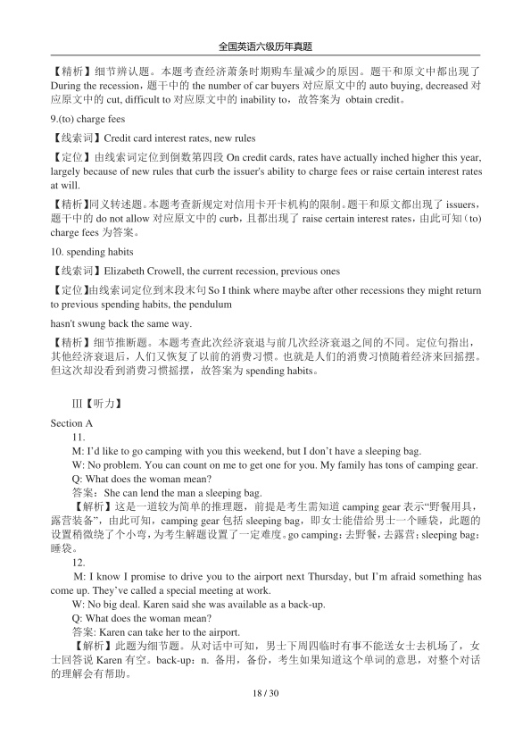
全国英语六级历年真题
18 / 30
【精析】细节辨认题。本题考查经济萧条时期购车量减少的原因。题干和原文中都出现了
During the recession，题干中的the number of car buyers 对应原文中的auto buying, decreased 对
应原文中的cut, difficult to 对应原文中的inability to，故答案为obtain credit。
9.(to) charge fees
【线索词】Credit card interest rates, new rules
【定位】由线索词定位到倒数第四段On credit cards, rates have actually inched higher this year,
largely because of new rules that curb the issuer's ability to charge fees or raise certain interest rates
at will.
【精析】同义转述题。本题考查新规定对信用卡开卡机构的限制。题干和原文都出现了issuers，
题干中的do not allow 对应原文中的curb，且都出现了raise certain interest rates，由此可知（to)
charge fees 为答案。
10. spending habits
【线索词】Elizabeth Crowell, the current recession, previous ones
【定位】由线索词定位到末段末句So I think where maybe after other recessions they might return
to previous spending habits, the pendulum
hasn't swung back the same way.
【精析】细节推断题。本题考查此次经济衰退与前几次经济衰退之间的不同。定位句指出，
其他经济衰退后，人们又恢复了以前的消费习惯。也就是人们的消费习愤随着经济来回摇摆。
但这次却没看到消费习惯摇摆，故答案为spending habits。
Ⅲ【听力】
Section A
11.
M: I’d like to go camping with you this weekend, but I don’t have a sleeping bag.
W: No problem. You can count on me to get one for you. My family has tons of camping gear.
Q: What does the woman mean?
答案：She can lend the man a sleeping bag.
【解析】这是一道较为简单的推理题，前提是考生需知道camping gear 表示“野餐用具，
露营装备”，由此可知，camping gear 包括sleeping bag，即女士能借给男士一个睡袋，此题的
设置稍微绕了个小弯，为考生解题设置了一定难度。go camping：去野餐，去露营；sleeping bag：
睡袋。
12.
M: I know I promise to drive you to the airport next Thursday, but I’m afraid something has
come up. They’ve called a special meeting at work.
W: No big deal. Karen said she was available as a back-up.
Q: What does the woman mean?
答案: Karen can take her to the airport.
【解析】此题为细节题。从对话中可知，男士下周四临时有事不能送女士去机场了，女
士回答说Karen 有空。back-up：n. 备用，备份，考生如果知道这个单词的意思，对整个对话
的理解会有帮助。
查看 / 复制本页文字
全国英语六级历年真题 18 / 30 【精析】细节辨认题。本题考查经济萧条时期购车量减少的原因。题干和原文中都出现了 During the recession，题干中的the number of car buyers 对应原文中的auto buying, decreased 对 应原文中的cut, difficult to 对应原文中的inability to，故答案为obtain credit。 9.(to) charge fees 【线索词】Credit card interest rates, new rules 【定位】由线索词定位到倒数第四段On credit cards, rates have actually inched higher this year, largely because of new rules that curb the issuer's ability to charge fees or raise certain interest rates at will. 【精析】同义转述题。本题考查新规定对信用卡开卡机构的限制。题干和原文都出现了issuers， 题干中的do not allow 对应原文中的curb，且都出现了raise certain interest rates，由此可知（to) charge fees 为答案。 10. spending habits 【线索词】Elizabeth Crowell, the current recession, previous ones 【定位】由线索词定位到末段末句So I think where maybe after other recessions they might return to previous spending habits, the pendulum hasn't swung back the same way. 【精析】细节推断题。本题考查此次经济衰退与前几次经济衰退之间的不同。定位句指出， 其他经济衰退后，人们又恢复了以前的消费习惯。也就是人们的消费习愤随着经济来回摇摆。 但这次却没看到消费习惯摇摆，故答案为spending habits。 Ⅲ【听力】 Section A 11. M: I’d like to go camping with you this weekend, but I don’t have a sleeping bag. W: No problem. You can count on me to get one for you. My family has tons of camping gear. Q: What does the woman mean? 答案：She can lend the man a sleeping bag. 【解析】这是一道较为简单的推理题，前提是考生需知道camping gear 表示“野餐用具， 露营装备”，由此可知，camping gear 包括sleeping bag，即女士能借给男士一个睡袋，此题的 设置稍微绕了个小弯，为考生解题设置了一定难度。go camping：去野餐，去露营；sleeping bag： 睡袋。 12. M: I know I promise to drive you to the airport next Thursday, but I’m afraid something has come up. They’ve called a special meeting at work. W: No big deal. Karen said she was available as a back-up. Q: What does the woman mean? 答案: Karen can take her to the airport. 【解析】此题为细节题。从对话中可知，男士下周四临时有事不能送女士去机场了，女 士回答说Karen 有空。back-up：n. 备用，备份，考生如果知道这个单词的意思，对整个对话 的理解会有帮助。
第 19 / 30 页
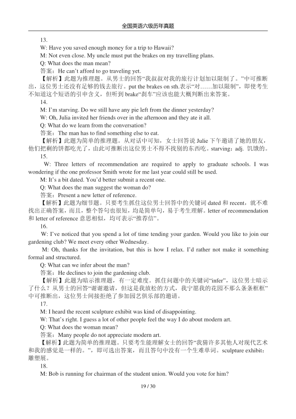
全国英语六级历年真题
19 / 30
13.
W: Have you saved enough money for a trip to Hawaii?
M: Not even close. My uncle must put the brakes on my travelling plans.
Q: What does the man mean?
答案：He can’t afford to go traveling yet.
【解析】此题为推理题。从男士的回答“我叔叔对我的旅行计划加以限制了。”中可推断
出，这位男士还没有足够的钱去旅行。put the brakes on sth.表示“对……加以限制”，即使考生
不知道这个短语的引申含义，但听到brake“刹车”应该也能大概判断出来答案。
14.
M: I’m starving. Do we still have any pie left from the dinner yesterday?
W: Oh, Julia invited her friends over in the afternoon and they ate it all.
Q: What do we learn from the conversation?
答案：The man has to find something else to eat.
【解析】此题为简单的推理题。从对话中可知，女士回答说Julie 下午邀请了她的朋友，
他们把剩的饼都吃光了，由此可推断出这位男士不得不找别的东西吃。starving：adj. 饥饿的。
15.
W: Three letters of recommendation are required to apply to graduate schools. I was
wondering if the one professor Smith wrote for me last year could still be used.
M: It’s a bit dated. You’d better submit a recent one.
Q: What does the man suggest the woman do?
答案：Present a new letter of reference.
【解析】此题为细节题。只要考生抓住这位男士回答中的关键词dated 和recent，就不难
找出正确答案，而且，整个答句也很短，均是简单句，易于考生理解。letter of recommendation
和letter of reference 意思相似，均可表示“推荐信”。
16.
W: I’ve noticed that you spend a lot of time tending your garden. Would you like to join our
gardening club? We meet every other Wednesday.
M: Oh, thanks for the invitation, but this is how I relax. I’d rather not make it something
formal and structured.
Q: What can we infer about the man?
答案：He declines to join the gardening club.
【解析】此题为暗示推理题，有一定难度。抓住问题中的关键词“infer”，这位男士暗示
了什么？从男士的回答“谢谢邀请，但这是我放松的方式，我宁愿我的花园不那么条条框框”
中可推断出，这位男士间接拒绝了参加园艺俱乐部的邀请。
17.
M: I heard the recent sculpture exhibit was kind of disappointing.
W: That’s right. I guess a lot of other people feel the way I do about modern art.
Q: What does the woman mean?
答案：Many people do not appreciate modern art.
【解析】此题为简单的推理题。只要考生能理解女士的回答“我猜许多其他人对现代艺术
和我的感觉是一样的。”，即可选出答案，而且答句中没有一个生难单词。sculpture exhibit：
雕塑展。
18.
M: Bob is running for chairman of the student union. Would you vote for him?
查看 / 复制本页文字
全国英语六级历年真题 19 / 30 13. W: Have you saved enough money for a trip to Hawaii? M: Not even close. My uncle must put the brakes on my travelling plans. Q: What does the man mean? 答案：He can’t afford to go traveling yet. 【解析】此题为推理题。从男士的回答“我叔叔对我的旅行计划加以限制了。”中可推断 出，这位男士还没有足够的钱去旅行。put the brakes on sth.表示“对……加以限制”，即使考生 不知道这个短语的引申含义，但听到brake“刹车”应该也能大概判断出来答案。 14. M: I’m starving. Do we still have any pie left from the dinner yesterday? W: Oh, Julia invited her friends over in the afternoon and they ate it all. Q: What do we learn from the conversation? 答案：The man has to find something else to eat. 【解析】此题为简单的推理题。从对话中可知，女士回答说Julie 下午邀请了她的朋友， 他们把剩的饼都吃光了，由此可推断出这位男士不得不找别的东西吃。starving：adj. 饥饿的。 15. W: Three letters of recommendation are required to apply to graduate schools. I was wondering if the one professor Smith wrote for me last year could still be used. M: It’s a bit dated. You’d better submit a recent one. Q: What does the man suggest the woman do? 答案：Present a new letter of reference. 【解析】此题为细节题。只要考生抓住这位男士回答中的关键词dated 和recent，就不难 找出正确答案，而且，整个答句也很短，均是简单句，易于考生理解。letter of recommendation 和letter of reference 意思相似，均可表示“推荐信”。 16. W: I’ve noticed that you spend a lot of time tending your garden. Would you like to join our gardening club? We meet every other Wednesday. M: Oh, thanks for the invitation, but this is how I relax. I’d rather not make it something formal and structured. Q: What can we infer about the man? 答案：He declines to join the gardening club. 【解析】此题为暗示推理题，有一定难度。抓住问题中的关键词“infer”，这位男士暗示 了什么？从男士的回答“谢谢邀请，但这是我放松的方式，我宁愿我的花园不那么条条框框” 中可推断出，这位男士间接拒绝了参加园艺俱乐部的邀请。 17. M: I heard the recent sculpture exhibit was kind of disappointing. W: That’s right. I guess a lot of other people feel the way I do about modern art. Q: What does the woman mean? 答案：Many people do not appreciate modern art. 【解析】此题为简单的推理题。只要考生能理解女士的回答“我猜许多其他人对现代艺术 和我的感觉是一样的。”，即可选出答案，而且答句中没有一个生难单词。sculpture exhibit： 雕塑展。 18. M: Bob is running for chairman of the student union. Would you vote for him?
第 20 / 30 页
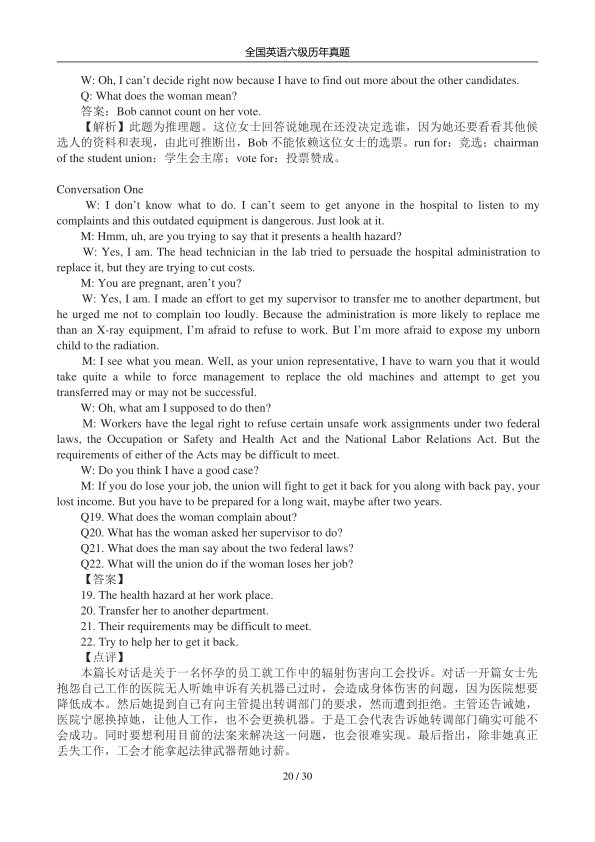
全国英语六级历年真题
20 / 30
W: Oh, I can’t decide right now because I have to find out more about the other candidates.
Q: What does the woman mean?
答案：Bob cannot count on her vote.
【解析】此题为推理题。这位女士回答说她现在还没决定选谁，因为她还要看看其他候
选人的资料和表现，由此可推断出，Bob 不能依赖这位女士的选票。run for：竞选；chairman
of the student union：学生会主席；vote for：投票赞成。
Conversation One
W: I don’t know what to do. I can’t seem to get anyone in the hospital to listen to my
complaints and this outdated equipment is dangerous. Just look at it.
M: Hmm, uh, are you trying to say that it presents a health hazard?
W: Yes, I am. The head technician in the lab tried to persuade the hospital administration to
replace it, but they are trying to cut costs.
M: You are pregnant, aren’t you?
W: Yes, I am. I made an effort to get my supervisor to transfer me to another department, but
he urged me not to complain too loudly. Because the administration is more likely to replace me
than an X-ray equipment, I’m afraid to refuse to work. But I’m more afraid to expose my unborn
child to the radiation.
M: I see what you mean. Well, as your union representative, I have to warn you that it would
take quite a while to force management to replace the old machines and attempt to get you
transferred may or may not be successful.
W: Oh, what am I supposed to do then?
M: Workers have the legal right to refuse certain unsafe work assignments under two federal
laws, the Occupation or Safety and Health Act and the National Labor Relations Act. But the
requirements of either of the Acts may be difficult to meet.
W: Do you think I have a good case?
M: If you do lose your job, the union will fight to get it back for you along with back pay, your
lost income. But you have to be prepared for a long wait, maybe after two years.
Q19. What does the woman complain about?
Q20. What has the woman asked her supervisor to do?
Q21. What does the man say about the two federal laws?
Q22. What will the union do if the woman loses her job?
【答案】
19. The health hazard at her work place.
20. Transfer her to another department.
21. Their requirements may be difficult to meet.
22. Try to help her to get it back.
【点评】
本篇长对话是关于一名怀孕的员工就工作中的辐射伤害向工会投诉。对话一开篇女士先
抱怨自己工作的医院无人听她申诉有关机器已过时，会造成身体伤害的问题，因为医院想要
降低成本。然后她提到自己有向主管提出转调部门的要求，然而遭到拒绝。主管还告诫她，
医院宁愿换掉她，让他人工作，也不会更换机器。于是工会代表告诉她转调部门确实可能不
会成功。同时要想利用目前的法案来解决这一问题，也会很难实现。最后指出，除非她真正
丢失工作，工会才能拿起法律武器帮她讨薪。
查看 / 复制本页文字
全国英语六级历年真题 20 / 30 W: Oh, I can’t decide right now because I have to find out more about the other candidates. Q: What does the woman mean? 答案：Bob cannot count on her vote. 【解析】此题为推理题。这位女士回答说她现在还没决定选谁，因为她还要看看其他候 选人的资料和表现，由此可推断出，Bob 不能依赖这位女士的选票。run for：竞选；chairman of the student union：学生会主席；vote for：投票赞成。 Conversation One W: I don’t know what to do. I can’t seem to get anyone in the hospital to listen to my complaints and this outdated equipment is dangerous. Just look at it. M: Hmm, uh, are you trying to say that it presents a health hazard? W: Yes, I am. The head technician in the lab tried to persuade the hospital administration to replace it, but they are trying to cut costs. M: You are pregnant, aren’t you? W: Yes, I am. I made an effort to get my supervisor to transfer me to another department, but he urged me not to complain too loudly. Because the administration is more likely to replace me than an X-ray equipment, I’m afraid to refuse to work. But I’m more afraid to expose my unborn child to the radiation. M: I see what you mean. Well, as your union representative, I have to warn you that it would take quite a while to force management to replace the old machines and attempt to get you transferred may or may not be successful. W: Oh, what am I supposed to do then? M: Workers have the legal right to refuse certain unsafe work assignments under two federal laws, the Occupation or Safety and Health Act and the National Labor Relations Act. But the requirements of either of the Acts may be difficult to meet. W: Do you think I have a good case? M: If you do lose your job, the union will fight to get it back for you along with back pay, your lost income. But you have to be prepared for a long wait, maybe after two years. Q19. What does the woman complain about? Q20. What has the woman asked her supervisor to do? Q21. What does the man say about the two federal laws? Q22. What will the union do if the woman loses her job? 【答案】 19. The health hazard at her work place. 20. Transfer her to another department. 21. Their requirements may be difficult to meet. 22. Try to help her to get it back. 【点评】 本篇长对话是关于一名怀孕的员工就工作中的辐射伤害向工会投诉。对话一开篇女士先 抱怨自己工作的医院无人听她申诉有关机器已过时，会造成身体伤害的问题，因为医院想要 降低成本。然后她提到自己有向主管提出转调部门的要求，然而遭到拒绝。主管还告诫她， 医院宁愿换掉她，让他人工作，也不会更换机器。于是工会代表告诉她转调部门确实可能不 会成功。同时要想利用目前的法案来解决这一问题，也会很难实现。最后指出，除非她真正 丢失工作，工会才能拿起法律武器帮她讨薪。
第 21 / 30 页
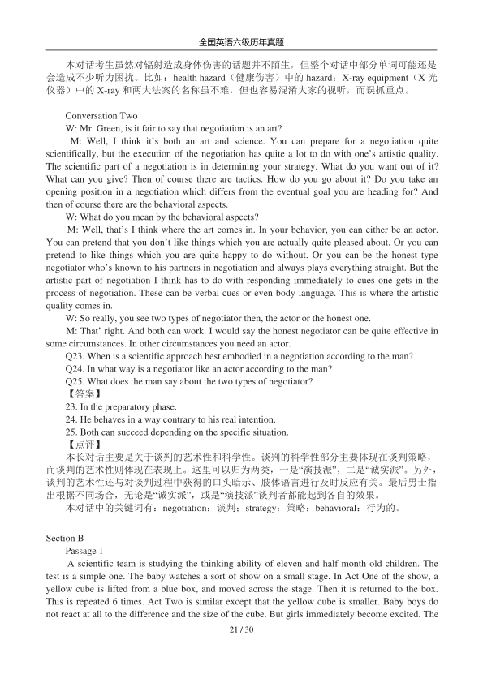
全国英语六级历年真题
21 / 30
本对话考生虽然对辐射造成身体伤害的话题并不陌生，但整个对话中部分单词可能还是
会造成不少听力困扰。比如：health hazard（健康伤害）中的hazard；X-ray equipment（X 光
仪器）中的X-ray 和两大法案的名称虽不难，但也容易混淆大家的视听，而误抓重点。
Conversation Two
W: Mr. Green, is it fair to say that negotiation is an art?
M: Well, I think it’s both an art and science. You can prepare for a negotiation quite
scientifically, but the execution of the negotiation has quite a lot to do with one’s artistic quality.
The scientific part of a negotiation is in determining your strategy. What do you want out of it?
What can you give? Then of course there are tactics. How do you go about it? Do you take an
opening position in a negotiation which differs from the eventual goal you are heading for? And
then of course there are the behavioral aspects.
W: What do you mean by the behavioral aspects?
M: Well, that’s I think where the art comes in. In your behavior, you can either be an actor.
You can pretend that you don’t like things which you are actually quite pleased about. Or you can
pretend to like things which you are quite happy to do without. Or you can be the honest type
negotiator who’s known to his partners in negotiation and always plays everything straight. But the
artistic part of negotiation I think has to do with responding immediately to cues one gets in the
process of negotiation. These can be verbal cues or even body language. This is where the artistic
quality comes in.
W: So really, you see two types of negotiator then, the actor or the honest one.
M: That’ right. And both can work. I would say the honest negotiator can be quite effective in
some circumstances. In other circumstances you need an actor.
Q23. When is a scientific approach best embodied in a negotiation according to the man?
Q24. In what way is a negotiator like an actor according to the man?
Q25. What does the man say about the two types of negotiator?
【答案】
23. In the preparatory phase.
24. He behaves in a way contrary to his real intention.
25. Both can succeed depending on the specific situation.
【点评】
本长对话主要是关于谈判的艺术性和科学性。谈判的科学性部分主要体现在谈判策略，
而谈判的艺术性则体现在表现上。这里可以归为两类，一是“演技派”，二是“诚实派”。另外，
谈判的艺术性还与对谈判过程中获得的口头暗示、肢体语言进行及时反应有关。最后男士指
出根据不同场合，无论是“诚实派”，或是“演技派”谈判者都能起到各自的效果。
本对话中的关键词有：negotiation：谈判；strategy：策略；behavioral：行为的。
Section B
Passage 1
A scientific team is studying the thinking ability of eleven and half month old children. The
test is a simple one. The baby watches a sort of show on a small stage. In Act One of the show, a
yellow cube is lifted from a blue box, and moved across the stage. Then it is returned to the box.
This is repeated 6 times. Act Two is similar except that the yellow cube is smaller. Baby boys do
not react at all to the difference and the size of the cube. But girls immediately become excited. The
查看 / 复制本页文字
全国英语六级历年真题 21 / 30 本对话考生虽然对辐射造成身体伤害的话题并不陌生，但整个对话中部分单词可能还是 会造成不少听力困扰。比如：health hazard（健康伤害）中的hazard；X-ray equipment（X 光 仪器）中的X-ray 和两大法案的名称虽不难，但也容易混淆大家的视听，而误抓重点。 Conversation Two W: Mr. Green, is it fair to say that negotiation is an art? M: Well, I think it’s both an art and science. You can prepare for a negotiation quite scientifically, but the execution of the negotiation has quite a lot to do with one’s artistic quality. The scientific part of a negotiation is in determining your strategy. What do you want out of it? What can you give? Then of course there are tactics. How do you go about it? Do you take an opening position in a negotiation which differs from the eventual goal you are heading for? And then of course there are the behavioral aspects. W: What do you mean by the behavioral aspects? M: Well, that’s I think where the art comes in. In your behavior, you can either be an actor. You can pretend that you don’t like things which you are actually quite pleased about. Or you can pretend to like things which you are quite happy to do without. Or you can be the honest type negotiator who’s known to his partners in negotiation and always plays everything straight. But the artistic part of negotiation I think has to do with responding immediately to cues one gets in the process of negotiation. These can be verbal cues or even body language. This is where the artistic quality comes in. W: So really, you see two types of negotiator then, the actor or the honest one. M: That’ right. And both can work. I would say the honest negotiator can be quite effective in some circumstances. In other circumstances you need an actor. Q23. When is a scientific approach best embodied in a negotiation according to the man? Q24. In what way is a negotiator like an actor according to the man? Q25. What does the man say about the two types of negotiator? 【答案】 23. In the preparatory phase. 24. He behaves in a way contrary to his real intention. 25. Both can succeed depending on the specific situation. 【点评】 本长对话主要是关于谈判的艺术性和科学性。谈判的科学性部分主要体现在谈判策略， 而谈判的艺术性则体现在表现上。这里可以归为两类，一是“演技派”，二是“诚实派”。另外， 谈判的艺术性还与对谈判过程中获得的口头暗示、肢体语言进行及时反应有关。最后男士指 出根据不同场合，无论是“诚实派”，或是“演技派”谈判者都能起到各自的效果。 本对话中的关键词有：negotiation：谈判；strategy：策略；behavioral：行为的。 Section B Passage 1 A scientific team is studying the thinking ability of eleven and half month old children. The test is a simple one. The baby watches a sort of show on a small stage. In Act One of the show, a yellow cube is lifted from a blue box, and moved across the stage. Then it is returned to the box. This is repeated 6 times. Act Two is similar except that the yellow cube is smaller. Baby boys do not react at all to the difference and the size of the cube. But girls immediately become excited. The
第 22 / 30 页
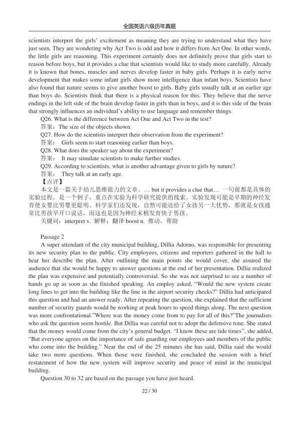
全国英语六级历年真题
22 / 30
scientists interpret the girls’ excitement as meaning they are trying to understand what they have
just seen. They are wondering why Act Two is odd and how it differs from Act One. In other words,
the little girls are reasoning. This experiment certainly does not definitely prove that girls start to
reason before boys, but it provides a clue that scientists would like to study more carefully. Already
it is known that bones, muscles and nerves develop faster in baby girls. Perhaps it is early nerve
development that makes some infant girls show more intelligence than infant boys. Scientists have
also found that nature seems to give another boost to girls. Baby girls usually talk at an earlier age
than boys do. Scientists think that there is a physical reason for this. They believe that the nerve
endings in the left side of the brain develop faster in girls than in boys, and it is this side of the brain
that strongly influences an individual’s ability to use language and remember things.
Q26. What is the difference between Act One and Act Two in the test?
答案：The size of the objects shown.
Q27. How do the scientists interpret their observation from the experiment?
答案：Girls seem to start reasoning earlier than boys.
Q28. What does the speaker say about the experiment?
答案：It may simulate scientists to make further studies.
Q29. According to scientists, what is another advantage given to girls by nature?
答案：They talk at an early age.
【点评】
本文是一篇关于幼儿思维能力的文章。… but it provides a clue that… 一句前都是具体的
实验过程，是一个例子，重点在实验为科学研究提供的线索。实验发现可能是早期的神经发
育使女婴比男婴更聪明。科学家们还发现，自然可能还给了女孩另一大优势，那就是女孩通
常比男孩早开口说话，而这也是因为神经末梢发育快于男孩。
关键词：interpret v. 解释；翻译boost n. 推动，帮助
Passage 2
A super attendant of the city municipal building, Dillia Adorno, was responsible for presenting
its new security plan to the public. City employees, citizens and reporters gathered in the hall to
hear her describe the plan. After outlining the main points she would cover, she assured the
audience that she would be happy to answer questions at the end of her presentation. Dillia realized
the plan was expensive and potentially controversial. So she was not surprised to see a number of
hands go up as soon as she finished speaking. An employ asked, “Would the new system create
long lines to get into the building like the line in the airport security checks?” Dillia had anticipated
this question and had an answer ready. After repeating the question, she explained that the sufficient
number of security guards would be working at peak hours to speed things along. The next question
was more confrontational.”Where was the money come from to pay for all of this?”The journalists
who ask the question seem hostile. But Dillia was careful not to adopt the defensive tone. She stated
that the money would come from the city’s general budget. “I know these are tide times”, she added,
“But everyone agrees on the importance of safe guarding our employees and members of the public
who come into the building.” Near the end of the 25 minutes she has said, Dillia said she would
take two more questions. When those were finished, she concluded the session with a brief
restatement of how the new system will improve security and peace of mind in the municipal
building.
Question 30 to 32 are based on the passage you have just heard.
查看 / 复制本页文字
全国英语六级历年真题 22 / 30 scientists interpret the girls’ excitement as meaning they are trying to understand what they have just seen. They are wondering why Act Two is odd and how it differs from Act One. In other words, the little girls are reasoning. This experiment certainly does not definitely prove that girls start to reason before boys, but it provides a clue that scientists would like to study more carefully. Already it is known that bones, muscles and nerves develop faster in baby girls. Perhaps it is early nerve development that makes some infant girls show more intelligence than infant boys. Scientists have also found that nature seems to give another boost to girls. Baby girls usually talk at an earlier age than boys do. Scientists think that there is a physical reason for this. They believe that the nerve endings in the left side of the brain develop faster in girls than in boys, and it is this side of the brain that strongly influences an individual’s ability to use language and remember things. Q26. What is the difference between Act One and Act Two in the test? 答案：The size of the objects shown. Q27. How do the scientists interpret their observation from the experiment? 答案：Girls seem to start reasoning earlier than boys. Q28. What does the speaker say about the experiment? 答案：It may simulate scientists to make further studies. Q29. According to scientists, what is another advantage given to girls by nature? 答案：They talk at an early age. 【点评】 本文是一篇关于幼儿思维能力的文章。… but it provides a clue that… 一句前都是具体的 实验过程，是一个例子，重点在实验为科学研究提供的线索。实验发现可能是早期的神经发 育使女婴比男婴更聪明。科学家们还发现，自然可能还给了女孩另一大优势，那就是女孩通 常比男孩早开口说话，而这也是因为神经末梢发育快于男孩。 关键词：interpret v. 解释；翻译boost n. 推动，帮助 Passage 2 A super attendant of the city municipal building, Dillia Adorno, was responsible for presenting its new security plan to the public. City employees, citizens and reporters gathered in the hall to hear her describe the plan. After outlining the main points she would cover, she assured the audience that she would be happy to answer questions at the end of her presentation. Dillia realized the plan was expensive and potentially controversial. So she was not surprised to see a number of hands go up as soon as she finished speaking. An employ asked, “Would the new system create long lines to get into the building like the line in the airport security checks?” Dillia had anticipated this question and had an answer ready. After repeating the question, she explained that the sufficient number of security guards would be working at peak hours to speed things along. The next question was more confrontational.”Where was the money come from to pay for all of this?”The journalists who ask the question seem hostile. But Dillia was careful not to adopt the defensive tone. She stated that the money would come from the city’s general budget. “I know these are tide times”, she added, “But everyone agrees on the importance of safe guarding our employees and members of the public who come into the building.” Near the end of the 25 minutes she has said, Dillia said she would take two more questions. When those were finished, she concluded the session with a brief restatement of how the new system will improve security and peace of mind in the municipal building. Question 30 to 32 are based on the passage you have just heard.
第 23 / 30 页
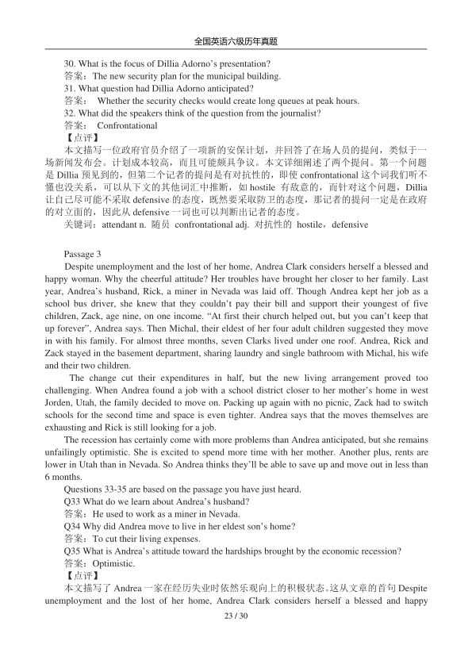
全国英语六级历年真题
23 / 30
30. What is the focus of Dillia Adorno’s presentation?
答案：The new security plan for the municipal building.
31. What question had Dillia Adorno anticipated?
答案：Whether the security checks would create long queues at peak hours.
32. What did the speakers think of the question from the journalist?
答案：Confrontational
【点评】
本文描写一位政府官员介绍了一项新的安保计划，并回答了在场人员的提问，类似于一
场新闻发布会。计划成本较高，而且可能颇具争议。本文详细阐述了两个提问。第一个问题
是Dillia 预见到的，但第二个记者的提问是有对抗性的，即使confrontational 这个词我们听不
懂也没关系，可以从下文的其他词汇中推断，如hostile 有敌意的，而针对这个问题，Dillia
让自己尽可能不采取defensive 的态度，既然要采取防卫的态度，那记者的提问一定是在政府
的对立面的，因此从defensive 一词也可以判断出记者的态度。
关键词：attendant n. 随员confrontational adj. 对抗性的hostile，defensive
Passage 3
Despite unemployment and the lost of her home, Andrea Clark considers herself a blessed and
happy woman. Why the cheerful attitude? Her troubles have brought her closer to her family. Last
year, Andrea’s husband, Rick, a miner in Nevada was laid off. Though Andrea kept her job as a
school bus driver, she knew that they couldn’t pay their bill and support their youngest of five
children, Zack, age nine, on one income. “At first their church helped out, but you can’t keep that
up forever”, Andrea says. Then Michal, their eldest of her four adult children suggested they move
in with his family. For almost three months, seven Clarks lived under one roof. Andrea, Rick and
Zack stayed in the basement department, sharing laundry and single bathroom with Michal, his wife
and their two children.
The change cut their expenditures in half, but the new living arrangement proved too
challenging. When Andrea found a job with a school district closer to her mother’s home in west
Jorden, Utah, the family decided to move on. Packing up again with no picnic, Zack had to switch
schools for the second time and space is even tighter. Andrea says that the moves themselves are
exhausting and Rick is still looking for a job.
The recession has certainly come with more problems than Andrea anticipated, but she remains
unfailingly optimistic. She is excited to spend more time with her mother. Another plus, rents are
lower in Utah than in Nevada. So Andrea thinks they’ll be able to save up and move out in less than
6 months.
Questions 33-35 are based on the passage you have just heard.
Q33 What do we learn about Andrea’s husband?
答案：He used to work as a miner in Nevada.
Q34 Why did Andrea move to live in her eldest son’s home?
答案：To cut their living expenses.
Q35 What is Andrea’s attitude toward the hardships brought by the economic recession?
答案：Optimistic.
【点评】
本文描写了Andrea 一家在经历失业时依然乐观向上的积极状态。这从文章的首句Despite
unemployment and the lost of her home, Andrea Clark considers herself a blessed and happy
查看 / 复制本页文字
全国英语六级历年真题 23 / 30 30. What is the focus of Dillia Adorno’s presentation? 答案：The new security plan for the municipal building. 31. What question had Dillia Adorno anticipated? 答案：Whether the security checks would create long queues at peak hours. 32. What did the speakers think of the question from the journalist? 答案：Confrontational 【点评】 本文描写一位政府官员介绍了一项新的安保计划，并回答了在场人员的提问，类似于一 场新闻发布会。计划成本较高，而且可能颇具争议。本文详细阐述了两个提问。第一个问题 是Dillia 预见到的，但第二个记者的提问是有对抗性的，即使confrontational 这个词我们听不 懂也没关系，可以从下文的其他词汇中推断，如hostile 有敌意的，而针对这个问题，Dillia 让自己尽可能不采取defensive 的态度，既然要采取防卫的态度，那记者的提问一定是在政府 的对立面的，因此从defensive 一词也可以判断出记者的态度。 关键词：attendant n. 随员confrontational adj. 对抗性的hostile，defensive Passage 3 Despite unemployment and the lost of her home, Andrea Clark considers herself a blessed and happy woman. Why the cheerful attitude? Her troubles have brought her closer to her family. Last year, Andrea’s husband, Rick, a miner in Nevada was laid off. Though Andrea kept her job as a school bus driver, she knew that they couldn’t pay their bill and support their youngest of five children, Zack, age nine, on one income. “At first their church helped out, but you can’t keep that up forever”, Andrea says. Then Michal, their eldest of her four adult children suggested they move in with his family. For almost three months, seven Clarks lived under one roof. Andrea, Rick and Zack stayed in the basement department, sharing laundry and single bathroom with Michal, his wife and their two children. The change cut their expenditures in half, but the new living arrangement proved too challenging. When Andrea found a job with a school district closer to her mother’s home in west Jorden, Utah, the family decided to move on. Packing up again with no picnic, Zack had to switch schools for the second time and space is even tighter. Andrea says that the moves themselves are exhausting and Rick is still looking for a job. The recession has certainly come with more problems than Andrea anticipated, but she remains unfailingly optimistic. She is excited to spend more time with her mother. Another plus, rents are lower in Utah than in Nevada. So Andrea thinks they’ll be able to save up and move out in less than 6 months. Questions 33-35 are based on the passage you have just heard. Q33 What do we learn about Andrea’s husband? 答案：He used to work as a miner in Nevada. Q34 Why did Andrea move to live in her eldest son’s home? 答案：To cut their living expenses. Q35 What is Andrea’s attitude toward the hardships brought by the economic recession? 答案：Optimistic. 【点评】 本文描写了Andrea 一家在经历失业时依然乐观向上的积极状态。这从文章的首句Despite unemployment and the lost of her home, Andrea Clark considers herself a blessed and happy
第 24 / 30 页
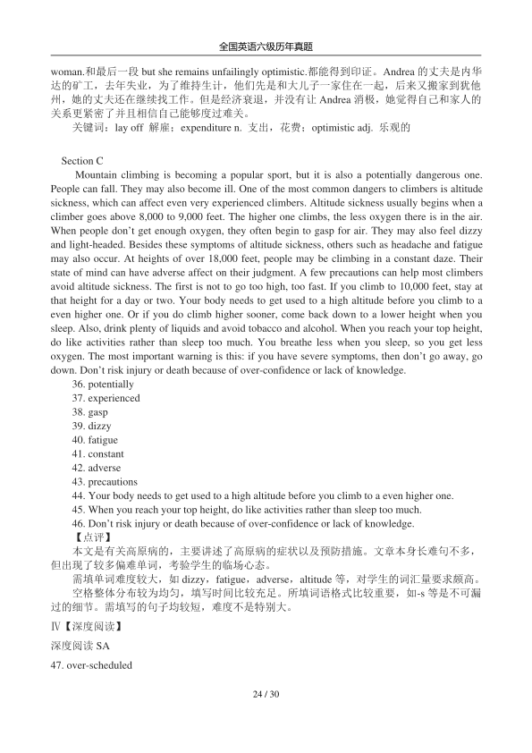
全国英语六级历年真题
24 / 30
woman.和最后一段but she remains unfailingly optimistic.都能得到印证。Andrea 的丈夫是内华
达的矿工，去年失业，为了维持生计，他们先是和大儿子一家住在一起，后来又搬家到犹他
州，她的丈夫还在继续找工作。但是经济衰退，并没有让Andrea 消极，她觉得自己和家人的
关系更紧密了并且相信自己能够度过难关。
关键词：lay off 解雇；expenditure n. 支出，花费；optimistic adj. 乐观的
Section C
Mountain climbing is becoming a popular sport, but it is also a potentially dangerous one.
People can fall. They may also become ill. One of the most common dangers to climbers is altitude
sickness, which can affect even very experienced climbers. Altitude sickness usually begins when a
climber goes above 8,000 to 9,000 feet. The higher one climbs, the less oxygen there is in the air.
When people don’t get enough oxygen, they often begin to gasp for air. They may also feel dizzy
and light-headed. Besides these symptoms of altitude sickness, others such as headache and fatigue
may also occur. At heights of over 18,000 feet, people may be climbing in a constant daze. Their
state of mind can have adverse affect on their judgment. A few precautions can help most climbers
avoid altitude sickness. The first is not to go too high, too fast. If you climb to 10,000 feet, stay at
that height for a day or two. Your body needs to get used to a high altitude before you climb to a
even higher one. Or if you do climb higher sooner, come back down to a lower height when you
sleep. Also, drink plenty of liquids and avoid tobacco and alcohol. When you reach your top height,
do like activities rather than sleep too much. You breathe less when you sleep, so you get less
oxygen. The most important warning is this: if you have severe symptoms, then don’t go away, go
down. Don’t risk injury or death because of over-confidence or lack of knowledge.
36. potentially
37. experienced
38. gasp
39. dizzy
40. fatigue
41. constant
42. adverse
43. precautions
44. Your body needs to get used to a high altitude before you climb to a even higher one.
45. When you reach your top height, do like activities rather than sleep too much.
46. Don’t risk injury or death because of over-confidence or lack of knowledge.
【点评】
本文是有关高原病的，主要讲述了高原病的症状以及预防措施。文章本身长难句不多，
但出现了较多偏难单词，考验学生的临场心态。
需填单词难度较大，如dizzy，fatigue，adverse，altitude 等，对学生的词汇量要求颇高。
空格整体分布较为均匀，填写时间比较充足。所填词语格式比较重要，如-s 等是不可漏
过的细节。需填写的句子均较短，难度不是特别大。
Ⅳ【深度阅读】
深度阅读SA
47. over-scheduled
查看 / 复制本页文字
全国英语六级历年真题 24 / 30 woman.和最后一段but she remains unfailingly optimistic.都能得到印证。Andrea 的丈夫是内华 达的矿工，去年失业，为了维持生计，他们先是和大儿子一家住在一起，后来又搬家到犹他 州，她的丈夫还在继续找工作。但是经济衰退，并没有让Andrea 消极，她觉得自己和家人的 关系更紧密了并且相信自己能够度过难关。 关键词：lay off 解雇；expenditure n. 支出，花费；optimistic adj. 乐观的 Section C Mountain climbing is becoming a popular sport, but it is also a potentially dangerous one. People can fall. They may also become ill. One of the most common dangers to climbers is altitude sickness, which can affect even very experienced climbers. Altitude sickness usually begins when a climber goes above 8,000 to 9,000 feet. The higher one climbs, the less oxygen there is in the air. When people don’t get enough oxygen, they often begin to gasp for air. They may also feel dizzy and light-headed. Besides these symptoms of altitude sickness, others such as headache and fatigue may also occur. At heights of over 18,000 feet, people may be climbing in a constant daze. Their state of mind can have adverse affect on their judgment. A few precautions can help most climbers avoid altitude sickness. The first is not to go too high, too fast. If you climb to 10,000 feet, stay at that height for a day or two. Your body needs to get used to a high altitude before you climb to a even higher one. Or if you do climb higher sooner, come back down to a lower height when you sleep. Also, drink plenty of liquids and avoid tobacco and alcohol. When you reach your top height, do like activities rather than sleep too much. You breathe less when you sleep, so you get less oxygen. The most important warning is this: if you have severe symptoms, then don’t go away, go down. Don’t risk injury or death because of over-confidence or lack of knowledge. 36. potentially 37. experienced 38. gasp 39. dizzy 40. fatigue 41. constant 42. adverse 43. precautions 44. Your body needs to get used to a high altitude before you climb to a even higher one. 45. When you reach your top height, do like activities rather than sleep too much. 46. Don’t risk injury or death because of over-confidence or lack of knowledge. 【点评】 本文是有关高原病的，主要讲述了高原病的症状以及预防措施。文章本身长难句不多， 但出现了较多偏难单词，考验学生的临场心态。 需填单词难度较大，如dizzy，fatigue，adverse，altitude 等，对学生的词汇量要求颇高。 空格整体分布较为均匀，填写时间比较充足。所填词语格式比较重要，如-s 等是不可漏 过的细节。需填写的句子均较短，难度不是特别大。 Ⅳ【深度阅读】 深度阅读SA 47. over-scheduled
第 25 / 30 页
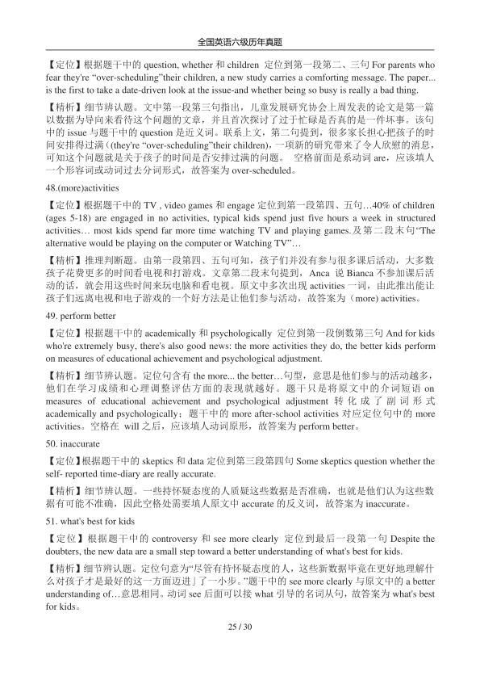
全国英语六级历年真题
25 / 30
【定位】根据题干中的question, whether 和children 定位到第一段第二、三句For parents who
fear they're “over-scheduling”their children, a new study carries a comforting message. The paper...
is the first to take a date-driven look at the issue-and whether being so busy is really a bad thing.
【精析】细节辨认题。文中第一段第三句指出，儿童发展研究协会上周发表的论文是第一篇
以数据为导向来看待这个问题的文章，并且首次探讨了过于忙碌是否真的是一件坏事。该句
中的issue 与题干中的question 是近义词。联系上文，第二句提到，很多家长担心把孩子的时
间安排得过满（(they're “over-scheduling”their children)，一项新的研究带来了令人欣慰的消息，
可知这个问题就是关于孩子的时间是否安排过满的问题。空格前面是系动词are，应该填人
一个形容词或动词过去分词形式，故答案为over-scheduled。
48.(more)activities
【定位】根据题干中的TV , video games 和engage 定位到第一段第四、五句…40% of children
(ages 5-18) are engaged in no activities, typical kids spend just five hours a week in structured
activities… most kids spend far more time watching TV and playing games.及第二段末句“The
alternative would be playing on the computer or Watching TV”…
【精析】推理判断题。由第一段第四、五句可知，孩子们并没有参与很多课后活动，大多数
孩子花费更多的时间看电视和打游戏。文章第二段末句提到，Anca 说Bianca 不参加课后活
动的话，就会用这些时间来玩电脑和看电视。原文中多次出现activities 一词，由此推出能让
孩子们远离电视和电子游戏的一个好方法是让他们参与活动，故答案为（more) activities。
49. perform better
【定位】根据题干中的academically 和psychologically 定位到第一段倒数第三句And for kids
who're extremely busy, there's also good news: the more activities they do, the better kids perform
on measures of educational achievement and psychological adjustment.
【精析】细节辨认题。定位句含有the more... the better…句型，意思是他们参与的活动越多，
他们在学习成绩和心理调整评估方面的表现就越好。题干只是将原文中的介词短语on
measures of educational achievement and psychological adjustment 转化成了副词形式
academically and psychologically；题干中的more after-school activities 对应定位句中的more
activities。空格在will 之后，应该填人动词原形，故答案为perform better。
50. inaccurate
【定位】根据题干中的skeptics 和data 定位到第三段第四句Some skeptics question whether the
self- reported time-diary are really accurate.
【精析】细节辨认题。一些持怀疑态度的人质疑这些数据是否准确，也就是他们认为这些数
据有可能不准确，因此空格处需要填人原文中accurate 的反义词，故答案为inaccurate。
51. what's best for kids
【定位】根据题干中的controversy 和see more clearly 定位到最后一段第一句Despite the
doubters, the new data are a small step toward a better understanding of what's best for kids.
【精析】细节辨认题。定位句意为“尽管有持怀疑态度的人，这些新数据毕竟在更好地理解什
么对孩子才是最好的这一方面迈进」了一小步。”题干中的see more clearly 与原文中的a better
understanding of…意思相同。动词see 后面可以接what 引导的名词从句，故答案为what's best
for kids。
查看 / 复制本页文字
全国英语六级历年真题 25 / 30 【定位】根据题干中的question, whether 和children 定位到第一段第二、三句For parents who fear they're “over-scheduling”their children, a new study carries a comforting message. The paper... is the first to take a date-driven look at the issue-and whether being so busy is really a bad thing. 【精析】细节辨认题。文中第一段第三句指出，儿童发展研究协会上周发表的论文是第一篇 以数据为导向来看待这个问题的文章，并且首次探讨了过于忙碌是否真的是一件坏事。该句 中的issue 与题干中的question 是近义词。联系上文，第二句提到，很多家长担心把孩子的时 间安排得过满（(they're “over-scheduling”their children)，一项新的研究带来了令人欣慰的消息， 可知这个问题就是关于孩子的时间是否安排过满的问题。空格前面是系动词are，应该填人 一个形容词或动词过去分词形式，故答案为over-scheduled。 48.(more)activities 【定位】根据题干中的TV , video games 和engage 定位到第一段第四、五句…40% of children (ages 5-18) are engaged in no activities, typical kids spend just five hours a week in structured activities… most kids spend far more time watching TV and playing games.及第二段末句“The alternative would be playing on the computer or Watching TV”… 【精析】推理判断题。由第一段第四、五句可知，孩子们并没有参与很多课后活动，大多数 孩子花费更多的时间看电视和打游戏。文章第二段末句提到，Anca 说Bianca 不参加课后活 动的话，就会用这些时间来玩电脑和看电视。原文中多次出现activities 一词，由此推出能让 孩子们远离电视和电子游戏的一个好方法是让他们参与活动，故答案为（more) activities。 49. perform better 【定位】根据题干中的academically 和psychologically 定位到第一段倒数第三句And for kids who're extremely busy, there's also good news: the more activities they do, the better kids perform on measures of educational achievement and psychological adjustment. 【精析】细节辨认题。定位句含有the more... the better…句型，意思是他们参与的活动越多， 他们在学习成绩和心理调整评估方面的表现就越好。题干只是将原文中的介词短语on measures of educational achievement and psychological adjustment 转化成了副词形式 academically and psychologically；题干中的more after-school activities 对应定位句中的more activities。空格在will 之后，应该填人动词原形，故答案为perform better。 50. inaccurate 【定位】根据题干中的skeptics 和data 定位到第三段第四句Some skeptics question whether the self- reported time-diary are really accurate. 【精析】细节辨认题。一些持怀疑态度的人质疑这些数据是否准确，也就是他们认为这些数 据有可能不准确，因此空格处需要填人原文中accurate 的反义词，故答案为inaccurate。 51. what's best for kids 【定位】根据题干中的controversy 和see more clearly 定位到最后一段第一句Despite the doubters, the new data are a small step toward a better understanding of what's best for kids. 【精析】细节辨认题。定位句意为“尽管有持怀疑态度的人，这些新数据毕竟在更好地理解什 么对孩子才是最好的这一方面迈进」了一小步。”题干中的see more clearly 与原文中的a better understanding of…意思相同。动词see 后面可以接what 引导的名词从句，故答案为what's best for kids。
第 26 / 30 页
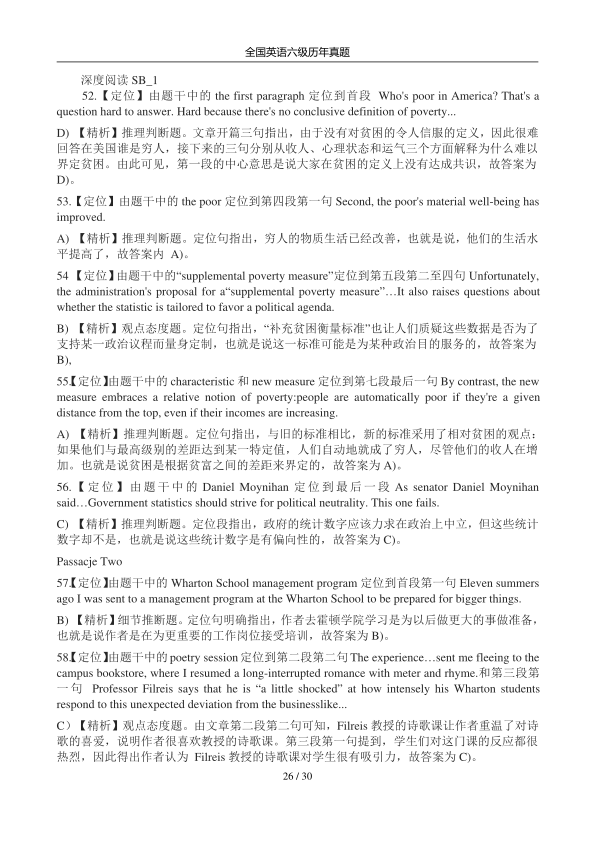
全国英语六级历年真题
26 / 30
深度阅读SB_1
52.【定位】由题干中的the first paragraph 定位到首段Who's poor in America? That's a
question hard to answer. Hard because there's no conclusive definition of poverty...
D) 【精析】推理判断题。文章开篇三句指出，由于没有对贫困的令人信服的定义，因此很难
回答在美国谁是穷人，接下来的三句分别从收人、心理状态和运气三个方面解释为什么难以
界定贫困。由此可见，第一段的中心意思是说大家在贫困的定义上没有达成共识，故答案为
D)。
53.【定位】由题干中的the poor 定位到第四段第一句Second, the poor's material well-being has
improved.
A) 【精析】推理判断题。定位句指出，穷人的物质生活已经改善，也就是说，他们的生活水
平提高了，故答案内A)。
54 【定位】由题干中的“supplemental poverty measure”定位到第五段第二至四句Unfortunately,
the administration's proposal for a“supplemental poverty measure”…It also raises questions about
whether the statistic is tailored to favor a political agenda.
B) 【精析】观点态度题。定位句指出，“补充贫困衡量标准”也让人们质疑这些数据是否为了
支持某一政治议程而量身定制，也就是说这一标准可能是为某种政治目的服务的，故答案为
B),
55.【定位】由题干中的characteristic 和new measure 定位到第七段最后一句By contrast, the new
measure embraces a relative notion of poverty:people are automatically poor if they're a given
distance from the top, even if their incomes are increasing.
A) 【精析】推理判断题。定位句指出，与旧的标准相比，新的标准采用了相对贫困的观点：
如果他们与最高级别的差距达到某一特定值，人们自动地就成了穷人，尽管他们的收人在增
加。也就是说贫困是根据贫富之间的差距来界定的，故答案为A)。
56. 【定位】由题干中的Daniel Moynihan 定位到最后一段As senator Daniel Moynihan
said…Government statistics should strive for political neutrality. This one fails.
C) 【精析】推理判断题。定位段指出，政府的统计数字应该力求在政治上中立，但这些统计
数字却不是，也就是说这些统计数字是有偏向性的，故答案为C)。
Passacje Two
57.【定位】由题干中的Wharton School management program 定位到首段第一句Eleven summers
ago I was sent to a management program at the Wharton School to be prepared for bigger things.
B) 【精析】细节推断题。定位句明确指出，作者去霍顿学院学习是为以后做更大的事做准备，
也就是说作者是在为更重要的工作岗位接受培训，故答案为B)。
58.【定位】由题干中的poetry session 定位到第二段第二句The experience…sent me fleeing to the
campus bookstore, where I resumed a long-interrupted romance with meter and rhyme.和第三段第
一句
Professor Filreis says that he is “a little shocked” at how intensely his Wharton students
respond to this unexpected deviation from the businesslike...
C）【精析】观点态度题。由文章第二段第二句可知，Filreis 教授的诗歌课让作者重温了对诗
歌的喜爱，说明作者很喜欢教授的诗歌课。第三段第一句提到，学生们对这门课的反应都很
热烈，因此得出作者认为Filreis 教授的诗歌课对学生很有吸引力，故答案为C)。
查看 / 复制本页文字
全国英语六级历年真题 26 / 30 深度阅读SB_1 52.【定位】由题干中的the first paragraph 定位到首段Who's poor in America? That's a question hard to answer. Hard because there's no conclusive definition of poverty... D) 【精析】推理判断题。文章开篇三句指出，由于没有对贫困的令人信服的定义，因此很难 回答在美国谁是穷人，接下来的三句分别从收人、心理状态和运气三个方面解释为什么难以 界定贫困。由此可见，第一段的中心意思是说大家在贫困的定义上没有达成共识，故答案为 D)。 53.【定位】由题干中的the poor 定位到第四段第一句Second, the poor's material well-being has improved. A) 【精析】推理判断题。定位句指出，穷人的物质生活已经改善，也就是说，他们的生活水 平提高了，故答案内A)。 54 【定位】由题干中的“supplemental poverty measure”定位到第五段第二至四句Unfortunately, the administration's proposal for a“supplemental poverty measure”…It also raises questions about whether the statistic is tailored to favor a political agenda. B) 【精析】观点态度题。定位句指出，“补充贫困衡量标准”也让人们质疑这些数据是否为了 支持某一政治议程而量身定制，也就是说这一标准可能是为某种政治目的服务的，故答案为 B), 55.【定位】由题干中的characteristic 和new measure 定位到第七段最后一句By contrast, the new measure embraces a relative notion of poverty:people are automatically poor if they're a given distance from the top, even if their incomes are increasing. A) 【精析】推理判断题。定位句指出，与旧的标准相比，新的标准采用了相对贫困的观点： 如果他们与最高级别的差距达到某一特定值，人们自动地就成了穷人，尽管他们的收人在增 加。也就是说贫困是根据贫富之间的差距来界定的，故答案为A)。 56. 【定位】由题干中的Daniel Moynihan 定位到最后一段As senator Daniel Moynihan said…Government statistics should strive for political neutrality. This one fails. C) 【精析】推理判断题。定位段指出，政府的统计数字应该力求在政治上中立，但这些统计 数字却不是，也就是说这些统计数字是有偏向性的，故答案为C)。 Passacje Two 57.【定位】由题干中的Wharton School management program 定位到首段第一句Eleven summers ago I was sent to a management program at the Wharton School to be prepared for bigger things. B) 【精析】细节推断题。定位句明确指出，作者去霍顿学院学习是为以后做更大的事做准备， 也就是说作者是在为更重要的工作岗位接受培训，故答案为B)。 58.【定位】由题干中的poetry session 定位到第二段第二句The experience…sent me fleeing to the campus bookstore, where I resumed a long-interrupted romance with meter and rhyme.和第三段第 一句 Professor Filreis says that he is “a little shocked” at how intensely his Wharton students respond to this unexpected deviation from the businesslike... C）【精析】观点态度题。由文章第二段第二句可知，Filreis 教授的诗歌课让作者重温了对诗 歌的喜爱，说明作者很喜欢教授的诗歌课。第三段第一句提到，学生们对这门课的反应都很 热烈，因此得出作者认为Filreis 教授的诗歌课对学生很有吸引力，故答案为C)。
第 27 / 30 页
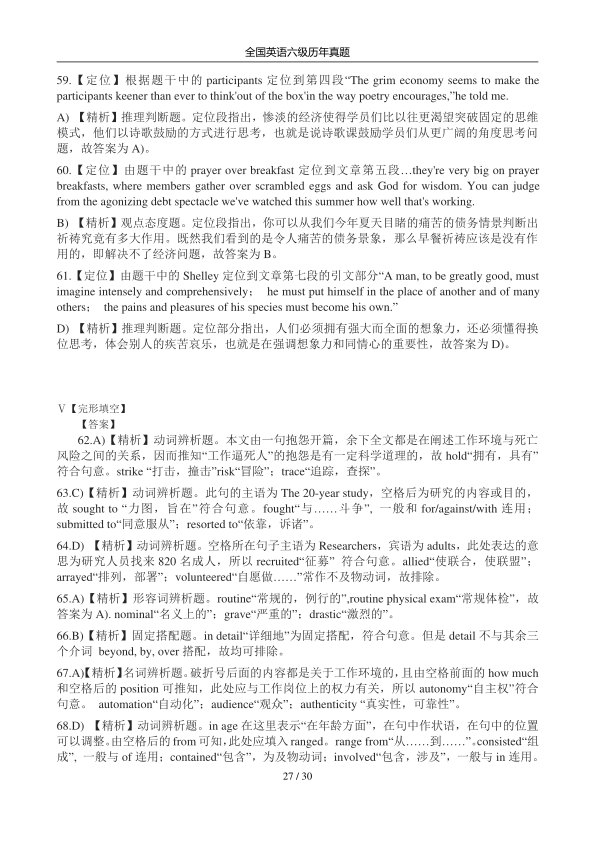
全国英语六级历年真题
27 / 30
59.【定位】根据题干中的participants 定位到第四段“The grim economy seems to make the
participants keener than ever to think'out of the box'in the way poetry encourages,”he told me.
A) 【精析】推理判断题。定位段指出，惨淡的经济使得学员们比以往更渴望突破固定的思维
模式，他们以诗歌鼓励的方式进行思考，也就是说诗歌课鼓励学员们从更广阔的角度思考问
题，故答案为A)。
60.【定位】由题干中的prayer over breakfast 定位到文章第五段…they're very big on prayer
breakfasts, where members gather over scrambled eggs and ask God for wisdom. You can judge
from the agonizing debt spectacle we've watched this summer how well that's working.
B) 【精析】观点态度题。定位段指出，你可以从我们今年夏天目睹的痛苦的债务情景判断出
祈祷究竟有多大作用。既然我们看到的是令人痛苦的债务景象，那么早餐祈祷应该是没有作
用的，即解决不了经济问题，故答案为B。
61.【定位】由题干中的Shelley 定位到文章第七段的引文部分“A man, to be greatly good, must
imagine intensely and comprehensively；he must put himself in the place of another and of many
others；the pains and pleasures of his species must become his own.”
D) 【精析】推理判断题。定位部分指出，人们必须拥有强大而全面的想象力，还必须懂得换
位思考，体会别人的疾苦哀乐，也就是在强调想象力和同情心的重要性，故答案为D)。
Ⅴ【完形填空】
【答案】
62.A)【精析】动词辨析题。本文由一句抱怨开篇，余下全文都是在阐述工作环境与死亡
风险之间的关系，因而推知“工作逼死人”的抱怨是有一定科学道理的，故hold“拥有，具有”
符合句意。strike “打击，撞击”risk“冒险”；trace“追踪，查探”。
63.C)【精析】动词辨析题。此句的主语为The 20-year study，空格后为研究的内容或目的，
故sought to “力图，旨在”符合句意。fought“与……斗争”, 一般和for/against/with 连用；
submitted to“同意服从”；resorted to“依靠，诉诸”。
64.D) 【精析】动词辨析题。空格所在句子主语为Researchers，宾语为adults，此处表达的意
思为研究人员找来820 名成人，所以recruited“征募” 符合句意。allied“使联合，使联盟”；
arrayed“排列，部署”；volunteered“自愿做……”常作不及物动词，故排除。
65.A)【精析】形容词辨析题。routine“常规的，例行的”,routine physical exam“常规体检”，故
答案为A). nominal“名义上的”；grave“严重的”；drastic“激烈的”。
66.B)【精析】固定搭配题。in detail“详细地”为固定搭配，符合句意。但是detail 不与其余三
个介词beyond, by, over 搭配，故均可排除。
67.A)【精析】名词辨析题。破折号后面的内容都是关于工作环境的，且由空格前面的how much
和空格后的position 可推知，此处应与工作岗位上的权力有关，所以autonomy“自主权”符合
句意。automation“自动化”；audience“观众”；authenticity “真实性，可靠性”。
68.D) 【精析】动词辨析题。in age 在这里表示“在年龄方面”，在句中作状语，在句中的位置
可以调整。由空格后的from 可知，此处应填入ranged。range from“从……到……”。consisted“组
成”, 一般与of 连用；contained“包含”，为及物动词；involved“包含，涉及”，一般与in 连用。
查看 / 复制本页文字
全国英语六级历年真题 27 / 30 59.【定位】根据题干中的participants 定位到第四段“The grim economy seems to make the participants keener than ever to think'out of the box'in the way poetry encourages,”he told me. A) 【精析】推理判断题。定位段指出，惨淡的经济使得学员们比以往更渴望突破固定的思维 模式，他们以诗歌鼓励的方式进行思考，也就是说诗歌课鼓励学员们从更广阔的角度思考问 题，故答案为A)。 60.【定位】由题干中的prayer over breakfast 定位到文章第五段…they're very big on prayer breakfasts, where members gather over scrambled eggs and ask God for wisdom. You can judge from the agonizing debt spectacle we've watched this summer how well that's working. B) 【精析】观点态度题。定位段指出，你可以从我们今年夏天目睹的痛苦的债务情景判断出 祈祷究竟有多大作用。既然我们看到的是令人痛苦的债务景象，那么早餐祈祷应该是没有作 用的，即解决不了经济问题，故答案为B。 61.【定位】由题干中的Shelley 定位到文章第七段的引文部分“A man, to be greatly good, must imagine intensely and comprehensively；he must put himself in the place of another and of many others；the pains and pleasures of his species must become his own.” D) 【精析】推理判断题。定位部分指出，人们必须拥有强大而全面的想象力，还必须懂得换 位思考，体会别人的疾苦哀乐，也就是在强调想象力和同情心的重要性，故答案为D)。 Ⅴ【完形填空】 【答案】 62.A)【精析】动词辨析题。本文由一句抱怨开篇，余下全文都是在阐述工作环境与死亡 风险之间的关系，因而推知“工作逼死人”的抱怨是有一定科学道理的，故hold“拥有，具有” 符合句意。strike “打击，撞击”risk“冒险”；trace“追踪，查探”。 63.C)【精析】动词辨析题。此句的主语为The 20-year study，空格后为研究的内容或目的， 故sought to “力图，旨在”符合句意。fought“与……斗争”, 一般和for/against/with 连用； submitted to“同意服从”；resorted to“依靠，诉诸”。 64.D) 【精析】动词辨析题。空格所在句子主语为Researchers，宾语为adults，此处表达的意 思为研究人员找来820 名成人，所以recruited“征募” 符合句意。allied“使联合，使联盟”； arrayed“排列，部署”；volunteered“自愿做……”常作不及物动词，故排除。 65.A)【精析】形容词辨析题。routine“常规的，例行的”,routine physical exam“常规体检”，故 答案为A). nominal“名义上的”；grave“严重的”；drastic“激烈的”。 66.B)【精析】固定搭配题。in detail“详细地”为固定搭配，符合句意。但是detail 不与其余三 个介词beyond, by, over 搭配，故均可排除。 67.A)【精析】名词辨析题。破折号后面的内容都是关于工作环境的，且由空格前面的how much 和空格后的position 可推知，此处应与工作岗位上的权力有关，所以autonomy“自主权”符合 句意。automation“自动化”；audience“观众”；authenticity “真实性，可靠性”。 68.D) 【精析】动词辨析题。in age 在这里表示“在年龄方面”，在句中作状语，在句中的位置 可以调整。由空格后的from 可知，此处应填入ranged。range from“从……到……”。consisted“组 成”, 一般与of 连用；contained“包含”，为及物动词；involved“包含，涉及”，一般与in 连用。
第 28 / 30 页
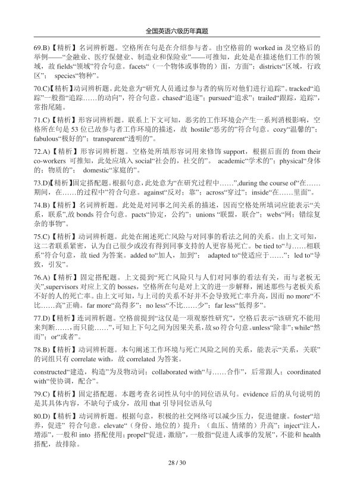
全国英语六级历年真题
28 / 30
69.B)【精析】名词辨析题。空格所在句是在介绍参与者。由空格前的worked in 及空格后的
举例——“金融业、医疗保健业、制造业和保险业”——可推知，此处是在描述他们工作的领
域，故fields“领域”符合句意。facets“（一个物体或事物的）面，方面”；districts“区域，行政
区”；species“物种”。
70.C)【精析】动词辨析题。此处意为“研究人员通过参与者的病历对他们进行追踪”。tracked“追
踪”一般指“追踪……的动向”，符合句意。chased“追逐”；pursued“追求”；trailed“跟踪，追踪”，
常指尾随。
71.C)【精析】形容词辨析题。联系上下文可知，恶劣的工作环境会产生一系列消极影响，空
格所在句是53 位已故参与者工作环境的描述，故hostile“恶劣的”符合句意。cozy“温馨的”；
fabulous“极好的”；transparent“透明的”。
72.A)【精析】形容词辨析题。空格处所填形容词用来修饰support，根据后面的from their
co-workers 可推知，此处应填入social“社会的，社交的”。academic“学术的”；physical“身体
的；物质的”；domestic“家庭的”。
73.D)【精析】固定搭配题。根据句意，此处意为“在研究过程中……”,during the course of“在……
期间，在……的过程中”符合句意。against“反对；靠”；across“穿过”；inside“在……里面”。
74.B)【精析】名词辨析题。此处是对同事之间关系的描述，因而空格处所填词应能表示“关
系，联系”,故bonds 符合句意。pacts“协定，公约”；unions “联盟，联合”；webs“网；错综复
杂的事物”。
75.C)【精析】动词辨析题。此处在阐述死亡风险与对同事的看法之间的关系。由上文可知，
这二者联系紧密，认为自己很少或没有得到同事支持的人更容易死亡。be tied to“与……相联
系”符合句意，故tied 为答案。added to“加人，加到”；adapted to“使适应于……”；led to“导
致，引发”。
76.A)【精析】固定搭配题。上文提到“死亡风险只与人们对同事的看法有关，而与老板无
关”,supervisors 对应上文的bosses，空格所在句是对上文的进一步解释，阐述那些与老板关系
不好的人的死亡率。由上文可知，与上司的关系不好并不会导致死亡率升高，因而no more“不
比……高”正确。far more“高得多”；no less“不比……少”；far less“低得多”。
77.D)【精析】连词辨析题。空格前提到“这仅是一项观察性研究”，空格后表示“该研究不能用
来判断……，而只能……”，可知上下句之间为因果关系，故so符合句意。unless“除非”；while“然
而”；or“或者”。
78.B)【精析】动词辨析题。本句阐述工作环境与死亡风险之间的关系，能表示“关系，关联”
的词组只有correlate with，故correlated 为答案。
constructed“建造，构造”为及物动词；collaborated with“与……合作”，后常跟人；coordinated
with“使协调，配合”。
79.C)【精析】固定搭配题。本题考查名词性从句中的同位语从句。evidence 后的从句说明的
是其具体内容，不缺句子成分，故用that 引导同位语从句
80.D)【精析】动词辨析题。根据句意，积极的社交网络可以减少压力，促进健康。foster“培
养，促进” 符合句意。elevate“（身份、地位的）提升；（血压、情绪的）升高”；inject“注人，
增添”，一般和into 搭配使用；propel“促进，激励”，一般指“促进人或事的发展”，不能和health
搭配，故排除。
查看 / 复制本页文字
全国英语六级历年真题 28 / 30 69.B)【精析】名词辨析题。空格所在句是在介绍参与者。由空格前的worked in 及空格后的 举例——“金融业、医疗保健业、制造业和保险业”——可推知，此处是在描述他们工作的领 域，故fields“领域”符合句意。facets“（一个物体或事物的）面，方面”；districts“区域，行政 区”；species“物种”。 70.C)【精析】动词辨析题。此处意为“研究人员通过参与者的病历对他们进行追踪”。tracked“追 踪”一般指“追踪……的动向”，符合句意。chased“追逐”；pursued“追求”；trailed“跟踪，追踪”， 常指尾随。 71.C)【精析】形容词辨析题。联系上下文可知，恶劣的工作环境会产生一系列消极影响，空 格所在句是53 位已故参与者工作环境的描述，故hostile“恶劣的”符合句意。cozy“温馨的”； fabulous“极好的”；transparent“透明的”。 72.A)【精析】形容词辨析题。空格处所填形容词用来修饰support，根据后面的from their co-workers 可推知，此处应填入social“社会的，社交的”。academic“学术的”；physical“身体 的；物质的”；domestic“家庭的”。 73.D)【精析】固定搭配题。根据句意，此处意为“在研究过程中……”,during the course of“在…… 期间，在……的过程中”符合句意。against“反对；靠”；across“穿过”；inside“在……里面”。 74.B)【精析】名词辨析题。此处是对同事之间关系的描述，因而空格处所填词应能表示“关 系，联系”,故bonds 符合句意。pacts“协定，公约”；unions “联盟，联合”；webs“网；错综复 杂的事物”。 75.C)【精析】动词辨析题。此处在阐述死亡风险与对同事的看法之间的关系。由上文可知， 这二者联系紧密，认为自己很少或没有得到同事支持的人更容易死亡。be tied to“与……相联 系”符合句意，故tied 为答案。added to“加人，加到”；adapted to“使适应于……”；led to“导 致，引发”。 76.A)【精析】固定搭配题。上文提到“死亡风险只与人们对同事的看法有关，而与老板无 关”,supervisors 对应上文的bosses，空格所在句是对上文的进一步解释，阐述那些与老板关系 不好的人的死亡率。由上文可知，与上司的关系不好并不会导致死亡率升高，因而no more“不 比……高”正确。far more“高得多”；no less“不比……少”；far less“低得多”。 77.D)【精析】连词辨析题。空格前提到“这仅是一项观察性研究”，空格后表示“该研究不能用 来判断……，而只能……”，可知上下句之间为因果关系，故so符合句意。unless“除非”；while“然 而”；or“或者”。 78.B)【精析】动词辨析题。本句阐述工作环境与死亡风险之间的关系，能表示“关系，关联” 的词组只有correlate with，故correlated 为答案。 constructed“建造，构造”为及物动词；collaborated with“与……合作”，后常跟人；coordinated with“使协调，配合”。 79.C)【精析】固定搭配题。本题考查名词性从句中的同位语从句。evidence 后的从句说明的 是其具体内容，不缺句子成分，故用that 引导同位语从句 80.D)【精析】动词辨析题。根据句意，积极的社交网络可以减少压力，促进健康。foster“培 养，促进” 符合句意。elevate“（身份、地位的）提升；（血压、情绪的）升高”；inject“注人， 增添”，一般和into 搭配使用；propel“促进，激励”，一般指“促进人或事的发展”，不能和health 搭配，故排除。
第 29 / 30 页
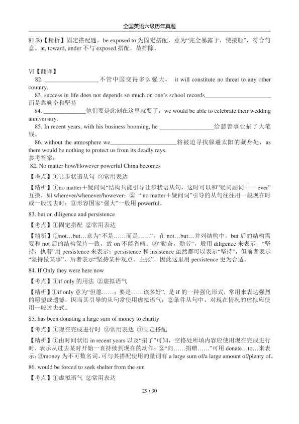
全国英语六级历年真题
29 / 30
81.B)【精析】固定搭配题。be exposed to 为固定搭配，意为“完全暴露于，使接触”，符合句
意。at, toward, under 不与exposed 搭配，故排除。
Ⅵ【翻译】
82. __________________不管中国变得多么强大，it will constitute no threat to any other
country.
83. success in life does not depends so much on one’s school records______________________
而是靠勤奋和坚持
84. ______________他们要是此刻在这里就要了，we would be able to celebrate their wedding
anniversary.
85. In recent years, with his business booming, he __________________给慈善事业捐了大笔
钱。
86. without the atmosphere we______________________将被迫寻找躲避太阳的藏身处，as
there would be nothing to protect us from its deadly rays.
参考答案：
82. No matter how/However powerful China becomes
【考点】①让步状语从句②常用表达
【精析】①no matter＋疑问词“结构只能引导让步状语从句，这时可以和”疑问副词十一ever”
互换，如wherever/whenever/however；②“ no matter＋疑问词”引导的从句往往用一般现在时
或一般过去时；③形容国家“强大”一般用powerful。
83. but on diligence and persistence
【考点】①固定搭配②常用表达
【精析】①not…but…意为“不是……而是……”，在not…but…并列结构中，but 后的结构需
要和not 后的结构保持一致，故on 不能省略；②“勤奋，勤劳”，般用diligence 来表示，“坚
持，执着”用persistence 来表示；persistence 和insistence 虽然都可以表示“坚持”，但前者表示
“坚持做某事”，后者表示“坚持某种观点、主张”，因此这里用persistence 更为合适。
84. If Only they were here now
【考点】①if only 的用法②虚拟语气
【精析】①if only 意为“但愿……；要是……该多好”, 是if 的一种强化形式，常用来表达强烈
的愿望或遗憾，因而其引导的从句常使用虚拟语气；②条件从句中，对现在情况的虚拟应使
用一般过去式。
85. has been donating a large sum of money to charity
【考点】①现在完成进行时②常用表达③固定搭配
【精析】①由时间状语in recent years 以及“捐了”可知，空格处所填内容应使用现在完成进行
时，表示从过去某时开始一直持续到现在的动作；②“向……捐赠……”可用donate…to…来表
示；③money 为不可数名词，可与其搭配使用的量词有a large sum of/a large amount of/plenty of。
86. would be forced to seek shelter from the sun
【考点】①虚拟语气②常用表达
查看 / 复制本页文字
全国英语六级历年真题 29 / 30 81.B)【精析】固定搭配题。be exposed to 为固定搭配，意为“完全暴露于，使接触”，符合句 意。at, toward, under 不与exposed 搭配，故排除。 Ⅵ【翻译】 82. __________________不管中国变得多么强大，it will constitute no threat to any other country. 83. success in life does not depends so much on one’s school records______________________ 而是靠勤奋和坚持 84. ______________他们要是此刻在这里就要了，we would be able to celebrate their wedding anniversary. 85. In recent years, with his business booming, he __________________给慈善事业捐了大笔 钱。 86. without the atmosphere we______________________将被迫寻找躲避太阳的藏身处，as there would be nothing to protect us from its deadly rays. 参考答案： 82. No matter how/However powerful China becomes 【考点】①让步状语从句②常用表达 【精析】①no matter＋疑问词“结构只能引导让步状语从句，这时可以和”疑问副词十一ever” 互换，如wherever/whenever/however；②“ no matter＋疑问词”引导的从句往往用一般现在时 或一般过去时；③形容国家“强大”一般用powerful。 83. but on diligence and persistence 【考点】①固定搭配②常用表达 【精析】①not…but…意为“不是……而是……”，在not…but…并列结构中，but 后的结构需 要和not 后的结构保持一致，故on 不能省略；②“勤奋，勤劳”，般用diligence 来表示，“坚 持，执着”用persistence 来表示；persistence 和insistence 虽然都可以表示“坚持”，但前者表示 “坚持做某事”，后者表示“坚持某种观点、主张”，因此这里用persistence 更为合适。 84. If Only they were here now 【考点】①if only 的用法②虚拟语气 【精析】①if only 意为“但愿……；要是……该多好”, 是if 的一种强化形式，常用来表达强烈 的愿望或遗憾，因而其引导的从句常使用虚拟语气；②条件从句中，对现在情况的虚拟应使 用一般过去式。 85. has been donating a large sum of money to charity 【考点】①现在完成进行时②常用表达③固定搭配 【精析】①由时间状语in recent years 以及“捐了”可知，空格处所填内容应使用现在完成进行 时，表示从过去某时开始一直持续到现在的动作；②“向……捐赠……”可用donate…to…来表 示；③money 为不可数名词，可与其搭配使用的量词有a large sum of/a large amount of/plenty of。 86. would be forced to seek shelter from the sun 【考点】①虚拟语气②常用表达
第 30 / 30 页
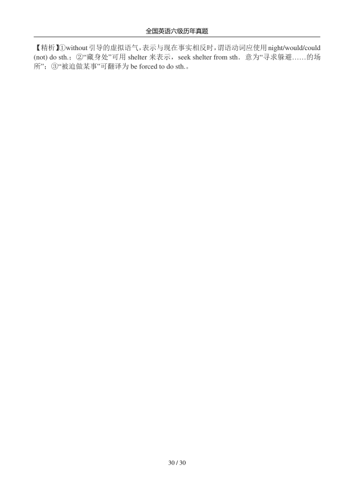
全国英语六级历年真题
30 / 30
【精析】①without引导的虚拟语气，表示与现在事实相反时，谓语动词应使用night/would/could
(not) do sth.；②“藏身处”可用shelter 来表示，seek shelter from sth．意为“寻求躲避……的场
所”；③“被迫做某事”可翻译为be forced to do sth.。
查看 / 复制本页文字
全国英语六级历年真题 30 / 30 【精析】①without引导的虚拟语气，表示与现在事实相反时，谓语动词应使用night/would/could (not) do sth.；②“藏身处”可用shelter 来表示，seek shelter from sth．意为“寻求躲避……的场 所”；③“被迫做某事”可翻译为be forced to do sth.。